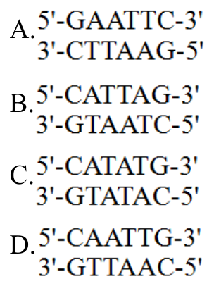

開卷有益 ／
醫師 ／ 醫學（一）（包括生物化學、解剖學、胚胎及發育生物學、組織學、生理學等科目知識及其臨床之應用） ／ 109 年第 1 次109 年第 1 次醫師醫學（一）（包括生物化學、解剖學、胚胎及發育生物學、組織學、生理學等科目知識及其臨床之應用）試題與答案
這一頁是民國 109 年第 1 次醫師醫學（一）（包括生物化學、解剖學、胚胎及發育生物學、組織學、生理學等科目知識及其臨床之應用）的整份歷屆試題，共 100 題，題目與標準答案出自考選部「國家考試試題及測驗式試題答案」開放資料，其中 100 題附有詳解。以下逐題列出題幹、選項與答案；要計時作答或記錄成績，請用線上練習。
考選部原始場次代碼：109020
線上作答這一科 →
全部 100 題
第 1 題
下列何者供應內囊後支（posterior limb of internal capsule）之血流？
（A） 前大腦動脈（anterior cerebral artery）（B） 後交通動脈（posterior communicating artery）（C） 丘腦穿通動脈（thalamoperforating artery）（D） 前脈絡叢動脈（anterior choroidal artery）答案：（D）
詳解與考點 正解：內囊後支的血液供應。內囊後支主要由中大腦動脈的豆紋動脈供應，並有前脈絡叢動脈供應其後下部；四個選項中只有（D）前脈絡叢動脈符合，故選 D。
A：前大腦動脈主要供應內側額頂葉與胼胝體等構造，非內囊後支的典型供應血管。
B：後交通動脈是 Willis 環的交通支，並非內囊後支的主要供應來源。
C：丘腦穿通動脈主要供應丘腦與相關深部構造，不能作為內囊後支的正確供應血管。
本題考點：內囊（internal capsule）是皮質脊髓束等投射纖維的匯集處；前脈絡叢動脈（anterior choroidal artery）供應內囊後支的後下部分；深部穿通動脈病灶可造成典型運動缺損。
第 2 題
下列何者連接前庭神經核（vestibular nucleus）與控制眼球運動之神經核？
（A） vestibulocerebellar fiber（B） central tegmental tract（C） medial longitudinal fasciculus（D） medial forebrain bundle答案：（C）
詳解與考點 正解：前庭神經核與眼球運動神經核間的直接連結，這是前庭眼反射的解剖基礎。內側縱束（medial longitudinal fasciculus, MLF）把前庭核訊息送至動眼、滑車與外旋神經核，使頭部轉動時眼球能反向代償移動，故選 C。
A：vestibulocerebellar fibers 連結前庭系統與小腦，主要參與平衡與姿勢整合，不是連往眼動神經核的主束。
B：central tegmental tract 連結紅核、下橄欖核等腦幹結構，非前庭核至眼動核的主要路徑。
D：medial forebrain bundle 是前腦與腦幹間的廣泛聯絡徑，與本題指定的前庭眼反射連結不符。
本題考點：內側縱束（medial longitudinal fasciculus, MLF）連結前庭核與眼球運動核；前庭眼反射（vestibulo-ocular reflex）使眼球在頭動時維持視線穩定；internuclear ophthalmoplegia 是 MLF 病變的典型臨床表現。
第 3 題
下列何者支配第一對咽弓（pharyngeal arch）衍生的構造？
（A） 三叉神經運動核（trigeminal motor nucleus）（B） 面神經核（facial nucleus）（C） 動眼神經核（oculomotor nucleus）（D） 上橄欖核（superior olivary nucleus）答案：（A）
詳解與考點 正解：第一對咽弓的衍生構造。第一咽弓衍生的咀嚼肌等肌肉由三叉神經下頜支的運動纖維支配，其運動神經元來自三叉神經運動核，故選 A。
B：面神經核支配第二咽弓衍生的表情肌，非第一咽弓構造。
C：動眼神經核支配多數外眼肌，並非咽弓衍生肌肉的運動核。
D：上橄欖核是聽覺路徑的腦幹中繼核，與咽弓肌肉支配無關。
本題考點：第一咽弓（first pharyngeal arch）形成咀嚼相關構造；三叉神經運動核（trigeminal motor nucleus）經 V3 支配第一咽弓肌肉；第二咽弓則由面神經（facial nerve）支配。
第 4 題
下列何者連接海綿竇（cavernous sinus）與橫竇（transverse sinus）？
（A） 乙狀竇（sigmoid sinus）（B） 上岩竇（superior petrosal sinus）（C） 下岩竇（inferior petrosal sinus）（D） 直竇（straight sinus）答案：（B）
詳解與考點 正解：海綿竇流向橫竇的靜脈通道。上岩竇（superior petrosal sinus）沿顳骨岩部上緣走行，將海綿竇的血流引至橫竇與乙狀竇交界附近，故選 B。
A：乙狀竇承接橫竇後續血流並轉為內頸靜脈，不是海綿竇與橫竇之間的直接連結。
C：下岩竇由海綿竇走向頸靜脈孔附近並注入頸內靜脈系統，不連接橫竇。
D：直竇連結下矢狀竇與大腦大靜脈，並匯入竇匯，非海綿竇的連通支。
本題考點：海綿竇（cavernous sinus）經上岩竇（superior petrosal sinus）與橫竇系統相通；下岩竇（inferior petrosal sinus）則引流至頸內靜脈；硬腦膜靜脈竇（dural venous sinuses）是無瓣膜的靜脈通道。
第 5 題
位於蝶骨大翼（greater wing）與小翼（lesser wing）間的構造為：
（A） 視神經孔（optic foramen）（B） 眶上裂（superior orbital fissure）（C） 圓孔（foramen rotundum）（D） 眶下裂（inferior orbital fissure）答案：（B）
詳解與考點 正解：蝶骨大翼與小翼「之間」的裂隙。眶上裂（superior orbital fissure）位於蝶骨小翼與大翼之間，連通中顱窩與眼眶，故選 B。
A：視神經孔位於蝶骨小翼內側的視神經管，不在大翼與小翼之間。
C：圓孔位於蝶骨大翼，通往翼腭窩；它看似也屬蝶骨孔洞，但位置在大翼本身而非兩翼間。
D：眶下裂位於上頜骨與蝶骨大翼等構成的眼眶下外側，不是蝶骨大翼與小翼之間。
本題考點：眶上裂（superior orbital fissure）位於蝶骨大翼與小翼間；視神經管（optic canal）位於小翼；圓孔（foramen rotundum）位於大翼並傳遞上頜神經。
第 6 題
耳下腺管（parotid duct）開口處口腔黏膜的痛覺，由下列何者傳導？
（A） 舌神經（lingual nerve）（B） 頰神經（buccal nerve）（C） 顴面神經（zygomaticofacial nerve）（D） 面神經（facial nerve）之頰支（buccal branch）答案：（B）
詳解與考點 正解：耳下腺管開口處「口腔黏膜的痛覺」。耳下腺管開口在上頜第二大臼齒對側的頰黏膜；該區一般感覺由三叉神經 V3 的頰神經（buccal nerve）傳導，故選 B。
A：舌神經主要傳導舌前 2/3 的一般感覺及口底相關感覺，不是頰黏膜的主要痛覺神經。
C：顴面神經是 V2 分支，支配顴部皮膚感覺，並不支配口內頰黏膜。
D：面神經的頰支是運動纖維，支配表情肌；名稱雖與頰神經相近，卻不傳導黏膜痛覺，是常見誘答。
本題考點：頰神經（buccal nerve）是三叉神經下頜支的感覺分支，支配頰黏膜；面神經頰支（buccal branch of facial nerve）為運動神經；耳下腺管（parotid duct）開口於上頜第二大臼齒對側頰黏膜。
第 7 題
在心臟上方，將動脈群包括主動脈（ascending aorta）及肺動脈幹（pulmonary trunk），與靜脈群包括肺靜脈（pulmonary vein）及上腔靜脈（superior vena cava）兩者分開的是：
（A） 心包膜橫竇（transverse pericardial sinus）（B） 心包膜斜竇（oblique pericardial sinus）（C） 冠狀竇（coronary sinus）（D） 心包膜腔胸骨面（sternal surface of pericardial cavity）答案：（A）
詳解與考點 正解：心臟上方將動脈群與靜脈群分開的心包膜腔隙。心包膜橫竇（transverse pericardial sinus）位於升主動脈、肺動脈幹後方，並在上腔靜脈與肺靜脈前方，正好把動脈流出道與靜脈流入道分隔，故選 A。
B：心包膜斜竇位於左心房後方，為肺靜脈與下腔靜脈反折形成的盲囊，不具題述的分隔關係。
C：冠狀竇收集心肌靜脈血並開口於右心房，非心包膜腔的竇隙。
D：心包膜腔胸骨面是心包膜腔的前方區域，非特定分隔動脈與靜脈群的通道。
本題考點：心包膜橫竇（transverse pericardial sinus）位於大動脈後、靜脈前；心包膜斜竇（oblique pericardial sinus）在左心房後；心包膜反折（pericardial reflections）形成兩者不同的空間關係。
第 8 題
膈下動脈（inferior phrenic artery）源自：
（A） 胸內動脈（internal thoracic artery）（B） 腹腔動脈幹（celiac trunk）（C） 腹主動脈（abdominal aorta）（D） 腎動脈（renal artery）答案：（C）
詳解與考點 正解：膈下動脈的來源。左右膈下動脈通常是腹主動脈在腹腔動脈幹附近發出的早期分支，主要供應膈肌，因此正確來源是（C）腹主動脈，故選 C。
A：胸內動脈源於鎖骨下動脈，供應胸壁前方與上腹壁，非膈下動脈的典型起源。
B：腹腔動脈幹供應前腸器官；膈下動脈可能與其起源相近或偶有變異，但標準解剖來源為腹主動脈，故此項非最佳答案。
D：腎動脈主要供應腎臟；膈下動脈可有起自腎動脈的變異，但並非本題所求的典型來源。
本題考點：膈下動脈（inferior phrenic arteries）通常源於腹主動脈（abdominal aorta）；其主要供應膈肌；腹腔動脈幹（celiac trunk）與腎動脈（renal artery）皆可見起源變異。
第 9 題
有關精索（spermatic cord）的敘述，下列何者錯誤？
（A） 外包三層筋膜（fascia）（B） 內有睪丸動脈（testicular artery）及輸精管（ductus deferens）（C） 內有蔓狀靜脈叢（pampiniform venous plexus）（D） 內無淋巴管（lymphatic vessels）答案：（D）
詳解與考點 正解：精索內「無淋巴管」的絕對敘述。精索包含睪丸動脈、輸精管、蔓狀靜脈叢、神經與淋巴管等構造，睪丸的淋巴回流也隨精索走向後腹膜淋巴結。因此（D）稱內無淋巴管，錯誤，故選 D。
A：精索由腹壁各層向下延續形成外精索筋膜、提睪肌與提睪肌筋膜、內精索筋膜等三層覆被，敘述正確。
B：睪丸動脈與輸精管皆為精索的重要內容物，敘述正確。
C：蔓狀靜脈叢環繞睪丸動脈，有助於逆流熱交換調節睪丸溫度，為精索內容物，敘述正確。
本題考點：精索（spermatic cord）包含輸精管、睪丸血管、蔓狀靜脈叢、神經與淋巴管；蔓狀靜脈叢（pampiniform venous plexus）參與睪丸溫度調節；睪丸淋巴（testicular lymphatics）主要回流至腰旁淋巴結。
第 10 題
在男性，下列何者是女性前庭球（bulb of the vestibule）的同源構造？
（A） 尿道球腺（bulbourethral gland）（B） 陰莖海綿體（copora cavernosa）（C） 尿道海綿體（corpus spongiosum）（D） 陰莖腳（crus of penis）答案：（C）
詳解與考點 正解：女性前庭球的胚胎同源構造。前庭球與男性尿道海綿體是同源勃起組織；男性相對應組織形成尿道海綿體，女性則保留為成對前庭球，故選 C。
A：尿道球腺是腺體，其女性同源構造為大前庭腺，不是前庭球。
B：陰莖海綿體屬勃起組織，但與女性陰蒂海綿體及陰蒂腳的同源關係較相對應，不是前庭球。
D：陰莖腳是陰莖海綿體的近端部分，對應女性陰蒂腳；它看似也是外生殖器勃起組織，卻非包繞前庭的前庭球同源物。
本題考點：前庭球（bulb of the vestibule）與尿道海綿體（corpus spongiosum）同源；大前庭腺（greater vestibular gland）與尿道球腺（bulbourethral gland）同源；外生殖器同源構造（homologous external genitalia）依胚胎發育來源辨認。
第 11 題
膝反射（knee jerk reflex），主要是測試下列何者的反應？
（A） 股神經（femoral nerve）（B） 閉孔神經（obturator nerve）（C） 坐骨神經（sciatic nerve）（D） 脛神經（tibial nerve）答案：（A）
詳解與考點 正解：「膝反射」，其反射弧的傳入與傳出主要都經由股神經（femoral nerve），以 L2–L4 節段、尤其 L4 為主。叩擊髕韌帶使股四頭肌肌梭受牽拉，感覺訊號經股神經進入脊髓後，同一神經的運動纖維使股四頭肌收縮、膝關節伸展，故選 A。
B：閉孔神經（obturator nerve）主要支配大腿內側的內收肌群，並非膝反射的主要反射弧神經。它因同為腰神經叢分支而看似可能相關，但功能肌群不同。
C：坐骨神經（sciatic nerve）主要支配大腿後側與膝以下多數構造，和髕腱叩擊所誘發的股四頭肌收縮不符。
D：脛神經（tibial nerve）是坐骨神經的末端分支之一，主要與小腿後側及足底功能相關，非膝反射的主要受測神經。
本題考點：膝反射（knee jerk reflex）是單突觸牽張反射（monosynaptic stretch reflex）；股神經（femoral nerve）負責其主要傳入與傳出；股四頭肌（quadriceps femoris）收縮造成膝伸展。
第 12 題
下列脊神經（spinal n.）的分支中，何者只含感覺神經纖維？
（A） 背側支（dorsal ramus）（B） 腹側支（ventral ramus）（C） 背根絲（dorsal rootlet）（D） 腹根絲（ventral rootlet）答案：（C）
詳解與考點 正解：「只含感覺神經纖維」。背根絲（dorsal rootlet）由周邊感覺神經元進入脊髓，承載傳入性（afferent）纖維；運動神經元的軸突則由腹根絲離開，因此背根絲只含感覺纖維，故選 C。
A：背側支（dorsal ramus）是脊神經形成後再分出的分支，已含感覺、運動及交感神經纖維，供應背部深層肌肉與皮膚，並非純感覺。
B：腹側支（ventral ramus）同樣是混合性神經，含感覺、運動及交感纖維，供應軀幹前外側與四肢。
D：腹根絲（ventral rootlet）只含由脊髓前角離開的運動性（efferent）纖維，方向恰與背根絲相反。
本題考點：脊神經根（spinal nerve roots）的功能分工——背根／背根絲（dorsal root/rootlet）為感覺傳入，腹根／腹根絲（ventral root/rootlet）為運動傳出；脊神經及其背、腹側支皆為混合神經。
第 13 題
在繞過腳內踝的跗骨隧道（tarsal tunnel）處，可以觸摸到下列何者的脈搏？
（A） 脛前動脈（anterior tibial artery）（B） 脛後動脈（posterior tibial artery）（C） 足底內側動脈（medial plantar artery）（D） 足底外側動脈（lateral plantar artery）答案：（B）
詳解與考點 正解：「繞過腳內踝的跗骨隧道」。脛後動脈（posterior tibial artery）隨脛神經等構造在屈肌支持帶深面通過內踝後方，可在內踝與跟腱之間觸及脈搏，故選 B。
A：脛前動脈（anterior tibial artery）經小腿前側進入足背，續為足背動脈，脈搏應在足背而非內踝後方尋找。
C：足底內側動脈（medial plantar artery）是脛後動脈在跗骨隧道遠端的分支，位於足底；它不以繞過內踝作為可觸脈搏的標誌。
D：足底外側動脈（lateral plantar artery）亦為脛後動脈末端分支，走向足底外側並參與足底弓，不是跗骨隧道處的主幹血管。
本題考點：跗骨隧道（tarsal tunnel）位於內踝後方、屈肌支持帶深面；脛後動脈（posterior tibial artery）在此可觸脈搏；足背動脈（dorsalis pedis artery）則是脛前動脈的延續。
第 14 題
關於基底核（basal ganglia）之敘述，下列何者錯誤？
（A） 黑質（substantia nigra）投射到殼部（putamen）（B） 丘腦腹前核（ventral anterior nucleus of thalamus）可參與直接（direct）和間接迴路（indirect pathway）（C） 黑質（substantia nigra）興奮直接迴路（direct pathway）（D） 間接迴路（indirect pathway）不受黑質（substantia nigra）調控答案：（D）
詳解與考點 正解：「何者錯誤」與「間接迴路」。黑質緻密部（substantia nigra pars compacta）的多巴胺會作用於紋狀體 D1 與 D2 受體，分別促進直接迴路、抑制間接迴路，因此兩條迴路都受黑質調控。「間接迴路不受黑質調控」錯誤，故選 D。
A：黑質可投射至殼部（putamen）；殼部是紋狀體的一部分，接受黑質多巴胺性投射，敘述正確。
B：丘腦腹前核（ventral anterior nucleus）是基底核—丘腦—皮質迴路的丘腦中繼核，直接與間接路徑最後都會影響其對運動皮質的輸出，敘述正確。
C：黑質多巴胺經 D1 受體增強直接迴路（direct pathway）的效應，促進運動啟動；它看似與「黑質是抑制性」矛盾，但重點是多巴胺對不同受體的淨效應不同，故敘述正確。
本題考點：基底核（basal ganglia）迴路——黑質緻密部（substantia nigra pars compacta）以多巴胺調控紋狀體；直接迴路（direct pathway）經 D1 受體受促進，間接迴路（indirect pathway）經 D2 受體受抑制。
第 15 題
丘腦內側膝狀體（medial geniculate body of thalamus），主要投射至下列何處？
（A） 顳橫迴（transverse temporal gyrus）（B） 外側枕顳迴（lateral occiptotemporal gyrus）（C） 島閾（limen insula）（D） 角迴（angular gyrus）答案：（A）
詳解與考點 正解：內側膝狀體（medial geniculate body），它是聽覺傳導路徑的丘腦中繼站，發出聽輻射至顳葉的初級聽覺皮質，即顳橫迴（transverse temporal gyrus，又稱 Heschl gyrus），故選 A。
B：外側枕顳迴（lateral occipitotemporal gyrus）位於視覺聯合處理相關區域，並非內側膝狀體的主要聽覺投射終點。
C：島閾（limen insula）是島葉與額、顳葉交界的解剖區域，不是初級聽覺皮質所在。
D：角迴（angular gyrus）屬頂葉聯合皮質，與語言、閱讀及跨感覺整合有關，並非丘腦聽覺中繼的直接主要投射處。
本題考點：聽覺傳導路徑（auditory pathway）——內側膝狀體（medial geniculate body）是丘腦聽覺中繼；初級聽覺皮質（primary auditory cortex）位於顳橫迴（transverse temporal gyrus）。
第 16 題
病人雙眼顳側偏盲（bitemporal hemianopia），其病灶位於何處？
（A） 視神經（optic nerve）（B） 眼窩（orbital fossa）（C） 視神經管（optic canal）（D） 視交叉（optic chiasma）答案：（D）
詳解與考點 正解：「雙眼顳側偏盲」。兩眼顳側視野的訊息分別由兩側鼻側視網膜接收；鼻側視網膜纖維恰在視交叉（optic chiasma）交叉。視交叉中央病灶同時傷及這些交叉纖維，故造成雙眼顳側偏盲，選 D。
A：單側視神經（optic nerve）病灶位於交叉前，通常造成同側單眼視力喪失或視野缺損，無法形成典型雙眼顳側偏盲。
B：眼窩（orbital fossa）病灶可影響眼球或眼眶內視神經，但通常表現為單側問題，缺乏傷及雙側交叉纖維的定位意義。
C：視神經管（optic canal）內的單側視神經受壓也偏向同側單眼缺損；它鄰近視交叉而看似可能相關，但解剖位置仍在交叉之前。
本題考點：視路定位（visual pathway localization）——鼻側視網膜纖維（nasal retinal fibers）在視交叉（optic chiasma）交叉；中央交叉病灶造成雙眼顳側偏盲（bitemporal hemianopia）。
第 17 題
基底核（basal ganglia）的直接迴路（direct pathway）不經過下列何構造？
（A） 丘腦（thalamus）（B） 丘腦下核（subthalamus）（C） 大腦皮質運動區（motor cortex）（D） 蒼白球（globus pallidus）答案：（B）
詳解與考點 正解：「直接迴路不經過」。直接迴路由大腦皮質興奮紋狀體，紋狀體抑制蒼白球內節，再解除對丘腦的抑制，丘腦回饋興奮運動皮質；丘腦下核（subthalamus）是間接迴路的重要中繼，並不在直接迴路中，故選 B。
A：丘腦（thalamus）接受蒼白球內節輸出後，投射回運動皮質，是直接迴路不可少的中繼。
C：大腦皮質運動區（motor cortex）是迴路起點之一，也接受丘腦回饋以促進運動，包含在直接迴路的閉環中。
D：蒼白球（globus pallidus）的內節是直接迴路的主要輸出核；紋狀體抑制它，才能使丘腦去抑制。
本題考點：基底核直接迴路（basal ganglia direct pathway）為皮質—紋狀體—蒼白球內節—丘腦—皮質；丘腦下核（subthalamic nucleus）屬間接迴路（indirect pathway）的關鍵構造。
第 18 題
顳頜關節（temporomandibular joint）手術後，耳下腺（parotid gland）分泌功能降低，下列何者最可能受損？
（A） 顏面神經（facial nerve）（B） 耳顳神經（auriculotemporal nerve）（C） 舌神經（lingual nerve）（D） 下齒槽神經（inferior alveolar nerve）答案：（B）
詳解與考點 正解：顳頜關節手術後的「耳下腺分泌降低」。耳顳神經（auriculotemporal nerve）是下頜神經分支，攜帶由耳神經節發出的副交感節後纖維至耳下腺；它走行於顳頜關節附近，受損最能解釋分泌下降，故選 B。
A：顏面神經（facial nerve）穿過耳下腺並支配表情肌，但不支配耳下腺的分泌；它與耳下腺位置密切而看似合理，卻是常見的解剖誘答。
C：舌神經（lingual nerve）負責舌前二分之一一般感覺，並攜帶鼓索纖維至下頜下神經節，主要與下頜下腺、舌下腺分泌相關。
D：下齒槽神經（inferior alveolar nerve）主要供應下頜牙齒與下唇、頦部感覺，沒有耳下腺的分泌纖維。
本題考點：耳下腺分泌（parotid secretion）的副交感路徑——耳神經節（otic ganglion）節後纖維隨耳顳神經（auriculotemporal nerve）到達耳下腺；顏面神經（facial nerve）不負責其分泌。
第 19 題
控制睫狀肌（ciliary muscle）的副交感節前神經纖維（parasympathetic preganglionic fibers），通常經由下列何者進入睫狀神經節（ciliary ganglion）？
（A） 動眼神經上分支（superior branch of oculomotor nerve）（B） 動眼神經下分支（inferior branch of oculomotor nerve）（C） 鼻睫神經（nasociliary nerve）（D） 外旋神經（abducent nerve）答案：（B）
詳解與考點 正解：控制睫狀肌的「副交感節前纖維」進入睫狀神經節。動眼神經副交感纖維隨其下分支（inferior branch）行走，再經至下斜肌的分支進入睫狀神經節；節後纖維經短睫神經支配睫狀肌，故選 B。
A：動眼神經上分支（superior branch）主要支配上直肌與提上眼瞼肌，並非通往睫狀神經節的副交感路徑。
C：鼻睫神經（nasociliary nerve）屬三叉神經眼支，感覺纖維可經過睫狀神經節而不在此突觸；它不是節前副交感纖維的進入路徑。
D：外旋神經（abducent nerve）只支配外直肌，沒有供應睫狀肌的副交感節前纖維。
本題考點：瞳孔與調節的副交感路徑（parasympathetic pathway for accommodation）——動眼神經（oculomotor nerve）下分支攜帶節前纖維至睫狀神經節（ciliary ganglion）；短睫神經（short ciliary nerves）將節後纖維送至睫狀肌。
第 20 題
動脈韌帶（ligamentum arteriosum），位在那兩條血管之間？
（A） 主動脈與肺動脈（B） 肺動脈與上腔靜脈（C） 主動脈與上腔靜脈（D） 主動脈與肺靜脈答案：（A）
詳解與考點 正解：動脈韌帶（ligamentum arteriosum）的兩端。它是胎兒動脈導管（ductus arteriosus）閉合後的纖維遺跡，連接主動脈弓近端的降主動脈側與肺動脈幹分叉附近，因此位在主動脈與肺動脈之間，故選 A。
B：肺動脈與上腔靜脈（superior vena cava）同在縱隔內，但兩者之間不存在動脈導管閉合後形成的韌帶。
C：主動脈與上腔靜脈之間沒有對應的胎兒分流管道，故不會形成動脈韌帶。
D：肺靜脈將含氧血送回左心房，並非胎兒動脈導管的連接端點；動脈韌帶名稱雖易讓人只聯想到主動脈，但另一端是肺動脈而非肺靜脈。
本題考點：動脈導管（ductus arteriosus）連接肺動脈幹與主動脈；出生後閉合形成動脈韌帶（ligamentum arteriosum）；此處鄰近左喉返神經（left recurrent laryngeal nerve）。
第 21 題
下列何反應與迷走神經無關？
（A） 咳嗽反射（B） 肺擴張反射（Hering-Breuer inflation reflex）（C） 抑制肺泡type II肺泡上皮分泌（D） 支氣管平滑肌收縮答案：（C）
詳解與考點 正解：「與迷走神經無關」。迷走神經參與氣道感覺反射與副交感節後效應，但抑制第二型肺泡上皮細胞（type II pneumocyte）分泌並不是其典型作用；第二型肺泡細胞的表面活性素分泌主要受其他局部與體液性調節，故選 C。
A：咳嗽反射（cough reflex）的傳入可經迷走神經將氣道刺激送至延腦，迷走神經與此反射有關。
B：肺擴張反射（Hering-Breuer inflation reflex）的肺牽張受器傳入訊號經迷走神經到達腦幹，屬典型迷走傳入反射。
D：迷走神經的副交感纖維可使支氣管平滑肌收縮，並增加氣道分泌，故此反應與迷走神經有關。
本題考點：迷走神經（vagus nerve）在呼吸調節中的角色——傳入纖維參與咳嗽反射（cough reflex）與 Hering-Breuer inflation reflex；副交感傳出纖維可造成支氣管收縮（bronchoconstriction）。
第 22 題
根除性乳房切除手術（radical mastectomy），經常清除下列何者而造成術後患側上肢水腫？
（A） 鎖骨上淋巴結（supraclavicular nodes）（B） 下深頸淋巴結（inferior deep cervical nodes）（C） 胸骨旁淋巴結（parasternal nodes）（D） 腋淋巴結（axillary nodes）答案：（D）
詳解與考點 正解：根除性乳房切除後的「患側上肢水腫」。上肢與乳房外側的大部分淋巴回流先到腋淋巴結（axillary nodes）；腋窩淋巴結清除會阻礙上肢淋巴回流，造成淋巴水腫，故選 D。
A：鎖骨上淋巴結（supraclavicular nodes）接收較深部頸部及部分終末淋巴回流，不是上肢淋巴水腫最直接的手術清除部位。
B：下深頸淋巴結（inferior deep cervical nodes）主要處理頭頸部淋巴回流，與同側上肢主要引流途徑不符。
C：胸骨旁淋巴結（parasternal nodes）接收乳房內側部分淋巴，雖與乳癌擴散評估相關，卻不能像腋淋巴結清除般典型地解釋術後整隻上肢水腫。
本題考點：乳房與上肢淋巴引流（lymphatic drainage）——腋淋巴結（axillary nodes）是乳房外側與上肢的主要引流站；腋窩清掃（axillary dissection）可導致上肢淋巴水腫（lymphedema）。
第 23 題
胸腺（thymus）主要位於：
（A） 上縱隔（superior mediastinum）（B） 下前縱隔（anterior inferior mediastinum）（C） 下中縱隔（middle inferior mediastinum）（D） 下後縱隔（posterior inferior mediastinum）答案：（A）
詳解與考點 正解：胸腺的「主要位於」。胸腺位於胸骨後方，主要佔據上縱隔（superior mediastinum），並可向下延伸至前縱隔；在題目所列分區中，最適切的是上縱隔，故選 A。
B：下前縱隔（anterior inferior mediastinum）可有胸腺的下方延伸部分，尤其在較年輕個體；但不是其主要位置，不能取代上縱隔作答。
C：下中縱隔（middle inferior mediastinum）以心臟、心包膜及大血管根部為主，並非胸腺所在。
D：下後縱隔（posterior inferior mediastinum）主要包含食道、胸主動脈與奇靜脈系統，與胸腺位置不符。
本題考點：縱隔分區（mediastinal compartments）——胸腺（thymus）主要在上縱隔（superior mediastinum），可延伸至前縱隔（anterior mediastinum）；中縱隔以心包膜與心臟為中心。
第 24 題
肺癌病患若出現聲帶麻痺，最有可能是影響到那一條神經？
（A） 膈神經（phrenic nerve）（B） 喉返神經（recurrent laryngeal nerve）（C） 交感神經幹（sympathetic trunk）（D） 肋間神經（intercostal nerve）答案：（B）
詳解與考點 正解：肺癌合併「聲帶麻痺」。喉返神經（recurrent laryngeal nerve）支配除環甲肌以外的大多數喉內肌，是聲帶運動的主要神經；它在胸腔內有較長走行，尤其左側繞過主動脈弓，故可能受肺部腫瘤侵犯而造成聲帶麻痺，選 B。
A：膈神經（phrenic nerve）支配橫膈，受損主要造成橫膈麻痺與呼吸型態異常，而非聲帶麻痺。
C：交感神經幹（sympathetic trunk）受侵犯可造成 Horner syndrome 等交感功能缺損，不能直接解釋聲帶無力。
D：肋間神經（intercostal nerves）支配肋間肌與胸壁感覺，受損可影響胸壁運動或感覺，並不支配喉內肌。
本題考點：喉返神經（recurrent laryngeal nerve）是迷走神經分支，支配多數喉內肌（intrinsic laryngeal muscles）；左喉返神經繞過主動脈弓，胸腔腫瘤可造成聲帶麻痺（vocal cord paralysis）。
第 25 題
下列何者不在幽門平面（transpyloric plane）上？
（A） 十二指腸空腸曲（duodenojejunal flexure）（B） 左右腎門（renal hilum）的連線（C） L1椎體（vertebral body of L1）（D） 脾門（splenic hilum）答案：（D）
詳解與考點 正解：「不在幽門平面」。幽門平面（transpyloric plane）約在 L1 水平，通過幽門、十二指腸空腸曲與兩腎門連線；脾門位於較左上方，並不在此標準平面上，故選 D。
A：十二指腸空腸曲（duodenojejunal flexure）是幽門平面的典型相關構造之一，位於此平面左側附近。
B：左右腎門（renal hilum）的連線約在 L1 水平，是幽門平面的重要表面解剖標誌。
C：L1 椎體（vertebral body of L1）是幽門平面的經典脊椎定位，選項正確。
本題考點：幽門平面（transpyloric plane）約對應 L1；重要標誌包括幽門（pylorus）、十二指腸空腸曲（duodenojejunal flexure）及腎門（renal hila）；脾門（splenic hilum）不屬此平面。
第 26 題
下列何者進入腎上腺髓質（suprarenal medulla），與嗜鉻細胞（chromaffin cell）形成突觸?
（A） 經小內臟神經（lesser splanchnic nerve）來的節前神經纖維（preganglionic fiber）（B） 經腹腔神經節（celiac ganglion）來的節後神經纖維（postganglionic fiber）（C） 經主動脈腎神經節（aorticorenal ganglion）來的節後神經纖維（postganglionic fiber）（D） 經下腹下神經叢（inferior hypogastric plexus）來的節前神經纖維（preganglionic fiber）答案：（A）
詳解與考點 正解：腎上腺髓質嗜鉻細胞的「形成突觸」。嗜鉻細胞是功能上相當於交感節後神經元的細胞，直接接受交感節前纖維支配；節前纖維可隨小內臟神經（lesser splanchnic nerve）到達腎上腺髓質並在此突觸，故選 A。
B：經腹腔神經節（celiac ganglion）而來的節後纖維會支配腹腔器官；腎上腺髓質的特徵正是節前纖維不先在周邊神經節突觸。
C：主動脈腎神經節（aorticorenal ganglion）的節後纖維可供應部分腹部構造，但不會作為與嗜鉻細胞突觸的纖維。
D：下腹下神經叢（inferior hypogastric plexus）位於骨盆腔，與腎上腺髓質的胸腰段交感節前支配路徑不符。
本題考點：腎上腺髓質（suprarenal medulla）是修飾的交感神經節（modified sympathetic ganglion）；嗜鉻細胞（chromaffin cells）接受交感節前纖維（preganglionic fibers）直接突觸支配；內臟神經（splanchnic nerves）傳遞此纖維。
第 27 題
肛直腸彎曲（anorectal flexure）之角度，主要由下列何者所牽引形成？
（A） 恥直腸肌（puborectalis muscle）（B） 恥尾肌（pubococcygeal muscle）（C） 會陰深橫肌（deep transverse perineal muscle）（D） 肛門外括約肌（external anal sphincter）答案：（A）
詳解與考點 正解：肛直腸彎曲（anorectal flexure）的牽引構造。恥直腸肌（puborectalis muscle）是提肛肌的一部分，形成環狀吊帶自後方拉住肛直腸交界，維持肛直腸角並有助於糞便自制，故選 A。
B：恥尾肌（pubococcygeal muscle）也是提肛肌的一部分，主要參與骨盆底支持，但不以環繞肛直腸交界形成肛直腸角為主要功能。
C：會陰深橫肌（deep transverse perineal muscle）位於深會陰隙，協助支撐會陰結構，並非造成肛直腸彎曲的牽引肌。
D：肛門外括約肌（external anal sphincter）環繞肛管、負責隨意性肛門閉合；它與恥直腸肌共同維持控便，但不是形成肛直腸角的主因。
本題考點：恥直腸肌（puborectalis muscle）是提肛肌（levator ani）的一部分；肛直腸角（anorectal angle）由其吊帶作用維持；放鬆恥直腸肌有利排便（defecation）。
第 28 題
下列何構造是位於會陰淺凹內（superficial perineal pouch）？①陰莖根（root of penis）②球尿道腺（bulborethral gland） ③大前庭腺（greater vestibular gland） ④坐骨海綿體肌（ischiocavernosusmuscle） ⑤尿道外括約肌（external urethral sphincter muscle）
（A） ①②③（B） ①③④（C） ②③⑤（D） ②④⑤答案：（B）
詳解與考點 正解：會陰淺凹（superficial perineal pouch）的內容物。陰莖根（①）與坐骨海綿體肌（④）位於淺會陰隙；女性的大前庭腺（③）亦位於此處。球尿道腺（②）及尿道外括約肌（⑤）在深會陰隙，因此正確組合為①③④，故選 B。
A：①陰莖根與③大前庭腺的定位正確，但（②）球尿道腺位於深會陰隙，故組合錯誤。
C：③大前庭腺位於淺會陰隙，但（②）球尿道腺與（⑤）尿道外括約肌均屬深會陰隙構造，故不符。
D：（④）坐骨海綿體肌在淺會陰隙，但（②）球尿道腺及（⑤）尿道外括約肌在深會陰隙，混合了不同腔隙的構造。
本題考點：會陰淺凹（superficial perineal pouch）包含陰莖根（root of penis）、坐骨海綿體肌（ischiocavernosus muscle）與大前庭腺（greater vestibular gland）；深會陰隙（deep perineal pouch）包含球尿道腺（bulbourethral gland）與尿道外括約肌（external urethral sphincter）。
第 29 題
大腿後肌肉群，由下列何者支配？
（A） 脛神經（tibial nerve）（B） 股神經（femoral nerve）（C） 閉孔神經（obturator nerve）（D） 坐骨神經（sciatic nerve）答案：（D）
詳解與考點 正解：大腿後肌肉群（hamstrings）的共同神經來源。大腿後側的半腱肌、半膜肌與股二頭肌長頭主要由坐骨神經（sciatic nerve）的脛部分支配，因此以整體神經幹作答應選 D。
A：脛神經（tibial nerve）雖是坐骨神經的終末分支，且其纖維成分支配多數後側肌群，但在大腿處的支配是由尚未分成終末神經的坐骨神經發出，題目問整體大腿後群時不選 A。
B：股神經（femoral nerve）主要支配大腿前側伸肌群，例如股四頭肌，與後側屈肌群相反。
C：閉孔神經（obturator nerve）主要支配大腿內側內收肌群，並非大腿後肌肉群的主要神經。
本題考點：大腿後肌群（hamstrings）主要受坐骨神經（sciatic nerve）支配；股神經（femoral nerve）供應前側肌群；閉孔神經（obturator nerve）供應內側肌群。
第 30 題
上臂的肌皮神經（musculocutaneous nerve）受損時，下列何者最不可能因此而受到嚴重的影響？
（A） 肱肌（brachialis）（B） 肱二頭肌（biceps brachii）（C） 喙肱肌（coracobrachalis）（D） 肱橈肌（brachioradialis）答案：（D）
詳解與考點 正解：肌皮神經（musculocutaneous nerve）受損時「最不可能」嚴重受影響的肌肉。肌皮神經支配喙肱肌、肱二頭肌與大部分肱肌；肱橈肌（brachioradialis）則由橈神經（radial nerve）支配，因此最不受肌皮神經損傷影響，故選 D。
A：肱肌（brachialis）主要由肌皮神經支配，是屈肘的重要肌肉，肌皮神經受損會影響其功能。
B：肱二頭肌（biceps brachii）由肌皮神經支配，負責屈肘及前臂旋後，受損時會明顯受影響。
C：喙肱肌（coracobrachialis）由肌皮神經支配，且肌皮神經通常穿過該肌，因此此選項尤其符合受損會受影響的情況。
本題考點：肌皮神經（musculocutaneous nerve）支配上臂前側屈肌群，包括肱二頭肌（biceps brachii）、肱肌（brachialis）與喙肱肌（coracobrachialis）；肱橈肌（brachioradialis）屬橈神經（radial nerve）支配。
第 31 題
構成手腕（wrist）的骨頭中，那兩塊骨頭會直接與橈骨遠端（distal end of radius）相關節？
（A） 大多角骨（trapezium）與小多角骨（trapezoid）（B） 頭狀骨（capitate）與鉤狀骨（hamate）（C） 舟狀骨（scaphoid）與月狀骨（lunate）（D） 三角骨（triquetrum）與豆狀骨（pisiform）答案：（C）
詳解與考點 正解：「直接與橈骨遠端相關節」。近列腕骨中，舟狀骨（scaphoid）位於橈側、月狀骨（lunate）居中央，兩者的近端關節面共同承接橈骨遠端；尺骨與腕骨之間則隔有關節盤，故選 C。
A：大多角骨（trapezium）與小多角骨（trapezoid）是遠列腕骨，主要與第一、二掌骨及近列腕骨相接，不會直接接觸橈骨遠端。
B：頭狀骨（capitate）與鉤狀骨（hamate）同為遠列腕骨；頭狀骨雖是腕骨中央的骨性核心，但其近端先接月狀骨，並非直接與橈骨關節。
D：三角骨（triquetrum）與豆狀骨（pisiform）位於尺側。三角骨近端面朝向關節盤而非橈骨；豆狀骨是位於屈腕尺側肌腱內的籽骨，僅與三角骨相接。
本題考點：腕骨排列（carpal bones）分為近列的舟狀骨、月狀骨、三角骨、豆狀骨與遠列的四骨；橈腕關節（radiocarpal joint）由橈骨遠端直接對舟狀骨及月狀骨。
第 32 題
由於胚體快速的成長，所以造成橫膈背部（dorsal part of diaphragm）的最終位置，相當於下列那一椎骨的高度？
（A） T8（B） T10（C） L1（D） L3答案：（C）
詳解與考點 正解：胚體快速成長造成橫膈相對下降。橫膈最初在頸部附近形成，隨胚胎背側與軀幹快速延長而下降；其背部最終約位於第一腰椎（L1）高度，故選 C。這種下降也解釋膈神經雖走入胸腔，仍保留頸神經節段的來源。
A：T8 是較高的胸椎高度，不能代表完成下降後橫膈背部的最終位置。
B：T10 仍在胸椎範圍；橫膈的中央腱可投影在較高位置，容易造成混淆，但題目問的是胚胎發育中橫膈背部的最終位置。
D：L3 比橫膈背部的最終位置更低，將胚體生長造成的尾側移動過度延伸。
本題考點：橫膈發育（development of diaphragm）包括膈中隔、胸腹膜褶、背側腸繫膜與體壁肌；胚胎相對下降（caudal descent）使其由頸部來源移至上腰椎附近。
第 33 題
胚胎發育時，下列那一咽溝（pharyngeal groove）會持續存在，並且衍生形成外聽道（external acousticmeatus）？
（A） 第一（B） 第二（C） 第三（D） 第四答案：（A）
詳解與考點 正解：「持續存在並形成外聽道」。第一咽溝（first pharyngeal groove）不會被頸竇覆蓋而消失，其外胚層衍生外聽道（external acoustic meatus）；第一咽囊則形成中耳腔與耳咽管，兩者不可混淆，故選 A。
B：第二咽溝在第二咽弓增生覆蓋後，通常併入暫時性的頸竇並消失，不形成正常外聽道。
C：第三咽溝同樣被覆蓋而消失，沒有持續形成成人的外耳構造。
D：第四咽溝亦屬會消退的咽溝；若咽溝殘留，可能形成側頸囊腫或竇道，但不是正常外聽道來源。
本題考點：咽器發育（pharyngeal apparatus）中第一咽溝形成外聽道（external acoustic meatus）；第一咽囊形成中耳腔與耳咽管（pharyngotympanic tube）；第二至第四咽溝通常消失。
第 34 題
精索積水（hydrocele of the spermatic cord）是由於下列何者閉鎖不全造成？
（A） 白膜（tunica albuginea）（B） 鞘突（processus vaginalis）（C） 泌尿生殖竇（urogenital sinus）（D） 泌尿生殖褶（urogenital fold）答案：（B）
詳解與考點 正解：精索內的積液。睪丸下降時腹膜向下突出形成鞘突（processus vaginalis）；正常情況下其近端會閉鎖，只留下包覆睪丸的鞘膜。鞘突局部或完全未閉鎖可留下與腹膜腔相連或被分隔的腔隙，使液體聚積於精索而形成精索積水，故選 B。
A：白膜（tunica albuginea）是睪丸本身的緻密結締組織囊，並非腹膜延伸形成的管腔，閉鎖異常不能解釋精索積水。
C：泌尿生殖竇（urogenital sinus）參與膀胱、尿道及部分生殖道發育，與鞘膜及精索內腹膜腔隙無直接來源關係。
D：泌尿生殖褶（urogenital fold）參與外生殖器形態發育；精索積水的關鍵是腹膜鞘突未閉鎖，而非此褶皺融合異常。
本題考點：鞘突（processus vaginalis）是睪丸下降伴隨的腹膜憩室；鞘突未閉鎖可導致交通性積水（communicating hydrocele）或間接腹股溝疝（indirect inguinal hernia）。
第 35 題
下列何項構造不會在前腹壁上造成腹膜皺襞（peritoneal fold）？
（A） 靜脈導管（ductus venosus）（B） 臍尿管（urachus）（C） 上腹下動脈（inferior epigastric artery）（D） 臍動脈（umbilical artery）答案：（A）
詳解與考點 正解：前腹壁的腹膜皺襞來源。正中臍襞來自臍尿管（urachus）遺跡，內側臍襞來自閉鎖的臍動脈，外側臍襞則覆蓋下腹壁動脈；靜脈導管（ductus venosus）位於肝臟相關區域，並不在前腹壁造成腹膜皺襞，故選 A。
B：臍尿管閉鎖後成為正中臍韌帶（median umbilical ligament），其表面隆起即正中臍襞。
C：下腹壁動脈（inferior epigastric artery）上方的腹膜形成外側臍襞（lateral umbilical fold），這是辨認腹股溝窩的重要地標。
D：臍動脈遠端閉鎖後形成內側臍韌帶（medial umbilical ligament），覆蓋其上的腹膜即內側臍襞。
本題考點：前腹壁腹膜皺襞（peritoneal folds of anterior abdominal wall）包括正中、內側與外側臍襞；分別對應臍尿管遺跡、閉鎖臍動脈及上腹下血管。
第 36 題
關於顱骨（cranium）發育的敘述，何項錯誤？
（A） 起源於腦組織周圍之間質組織（B） 部分神經顱（neurocranium）由多塊軟骨癒合形成（C） 臟顱（viscerocranium）是大腦的主要保護結構（D） 第一、二對咽弓（pharyngeal arch）參與軟骨性臟顱（cartilaginous viscerocranium）的形成答案：（C）
詳解與考點 正解：題目問錯誤敘述，關鍵是神經顱與臟顱的功能分工。神經顱（neurocranium）包覆並保護大腦；臟顱（viscerocranium）主要構成顏面骨架、與呼吸消化道入口相關，不能說是大腦的主要保護結構，故錯誤的是 C。
A：顱骨的間質來源包括神經嵴與中胚層在腦周圍形成的間質，敘述符合顱骨發育的概念，故非答案。
B：軟骨性神經顱（cartilaginous neurocranium）由多塊軟骨模型形成後骨化並癒合，構成顱底的一部分，敘述正確。
D：第一、二咽弓參與臟顱相關軟骨與骨性構造的發育，故此敘述方向正確，並非題目所問的錯誤項。
本題考點：神經顱（neurocranium）保護腦部，分為膜性與軟骨性部分；臟顱（viscerocranium）形成顏面骨架，與咽弓（pharyngeal arches）發育密切相關。
第 37 題
關於成熟的類上皮組織（epithelioid tissue）的細胞之敘述，下列何項錯誤？
（A） 有游離表面（free surface）（B） 有側區（lateral domain）（C） 有基底區（basal domain）（D） 基底區與基底膜（basement membrane）接觸答案：（A）
詳解與考點 正解：題目問錯誤敘述，關鍵在「類上皮組織（epithelioid tissue）」並非規則覆蓋表面的成熟上皮。典型上皮細胞才具有明確的頂端游離表面（free surface）、側區與基底區極性；類上皮細胞常呈群集或索狀分布，未必有朝向腔面或體表的游離面。因此 A 的一概而論不正確，故選 A。
B：細胞彼此相鄰時可形成側區（lateral domain）及細胞間連結，是類上皮樣細胞保有上皮性質的表現，故非答案。
C：類上皮細胞仍可呈現朝向基質的基底區（basal domain），不能因其不形成完整表面上皮就否定此極性。
D：基底區與基底膜（basement membrane）接觸是上皮性細胞與結締組織介面的基本關係；此選項看似可因類上皮細胞分布不規則而被懷疑，但並非本題要否定的特徵。
本題考點：上皮細胞極性（epithelial cell polarity）包括頂端、側方及基底區；類上皮組織（epithelioid tissue）可有上皮樣特徵，但不必然形成具游離表面的完整上皮層。
第 38 題
平滑肌細胞內，細絲（thin filaments）和中間絲（intermediate filaments）會固著在下列何者？
（A） 胞飲小泡（pinocytotic vesicles）（B） 橫小管（T-tubules）（C） 細胞膜小凹（caveolae）（D） 緻密體（dense body）答案：（D）
詳解與考點 正解：平滑肌的收縮裝置固定點。平滑肌沒有骨骼肌的肌節與 Z 線；其細絲及中間絲會錨定於胞質內或細胞膜下的緻密體（dense bodies），收縮時藉此將張力傳遞到整個細胞，故選 D。
A：胞飲小泡（pinocytotic vesicles）參與物質運輸，並不是肌動蛋白細絲與中間絲的固定構造。
B：平滑肌細胞沒有發達的橫小管（T-tubules）；這是骨骼肌與心肌興奮—收縮耦合的典型構造。
C：細胞膜小凹（caveolae）可協助鈣離子訊號與膜面積調節，外觀容易被視為 T 小管替代物，但不承擔細絲固定的角色。
本題考點：平滑肌收縮（smooth muscle contraction）以緻密體（dense bodies）作為類似 Z 線的錨定點；細胞膜小凹（caveolae）參與鈣離子相關訊號，但不同於骨骼肌 T 小管。
第 39 題
下列有關骨髓（bone marrow）的敘述，何者正確？
（A） 具有竇狀系統（sinusoidal system），是一個封閉型的循環系統，新生的血球細胞必須穿透內皮（endothelium），才能進入循環（B） 黃骨髓（yellow bone marrow）是活化的骨髓，負責製造各種血球細胞（C） 在長骨（long bone）內的非造血空間，會被纖維母細胞（fibroblast）占據（D） 巨核細胞（megakaryocyte）釋放的血小板（platelet），必須藉由網狀細胞（reticular cell）的協助，才能進入竇狀系統（sinusoidal system）答案：（A）
詳解與考點 正解：骨髓竇狀系統與新生血球進入血流的方式。骨髓血管形成相對封閉的竇狀循環；造血細胞成熟後需穿越竇狀內皮進入竇腔，才可進入全身循環，故 A 正確。
B：黃骨髓（yellow bone marrow）以脂肪細胞為主，造血活性低；負責大量製造血球的是紅骨髓（red bone marrow）。
C：長骨的非造血空間主要由脂肪細胞占據，而非由纖維母細胞（fibroblast）填滿。
D：巨核細胞鄰近竇狀血管，將原血小板突起伸入竇腔後釋放血小板；其進入竇狀系統不以網狀細胞（reticular cell）協助為必要條件。
本題考點：骨髓微循環（bone marrow microcirculation）具有竇狀血管（sinusoids）；紅骨髓（red marrow）負責造血，黃骨髓（yellow marrow）以脂肪組織為主；巨核細胞（megakaryocyte）在竇狀血管旁釋放血小板。
第 40 題
下列有關周邊神經組織（peripheral nervous tissue）的敘述，何者錯誤？
（A） 神經內膜（endoneurium）的膠原纖維大部分由纖維母細胞（fibroblast）所合成（B） 神經束膜（perineurium）是由扁平的神經束膜細胞（perineurial cell）所構成（C） 神經束膜細胞（perineurial cell）間之緊密結合（tight junction）形成血–神經屏障（blood-nerve barrier）（D） 神經外膜（epineurium）由典型的緻密結締組織（dense connective tissue）所構成答案：（A）
詳解與考點 正解：依本題採用的組織學判準，神經內膜的細膠原纖維主要歸於許旺細胞（Schwann cell）合成，故不能概括為大部分由一般纖維母細胞（fibroblast）合成，選項 A 為錯誤。惟不同資料對許旺細胞與神經內膜纖維母細胞的相對貢獻有不同表述
B：神經束膜（perineurium）由多層扁平的神經束膜細胞（perineurial cells）構成，敘述正確，故非答案。
C：神經束膜細胞間的緊密結合（tight junction）限制物質通透，是血－神經屏障（blood-nerve barrier）的重要基礎，敘述正確。
D：神經外膜（epineurium）包覆整條周邊神經，含血管及較粗的膠原纖維，屬緻密結締組織（dense connective tissue），敘述正確。
本題考點：周邊神經結締組織鞘（connective tissue sheaths of peripheral nerve）分為神經內膜、神經束膜與神經外膜；血－神經屏障（blood-nerve barrier）主要由神經束膜細胞的緊密結合維持。
第 41 題
下列有關第一型肺泡細胞（type-I pneumocyte）之敘述，何項正確？
（A） 細胞內有膜狀的層狀體（lamellar body）（B） 主要功能是吞噬灰塵或紅血球（C） 與內皮細胞（endothelial cell）組成氣血屏障（air-blood barrier）（D） 在肺泡細胞中占60%，但僅覆蓋5%的肺泡表面（alveolar air surface）答案：（C）
詳解與考點 正解：第一型肺泡細胞的超薄氣體交換角色。第一型肺泡細胞（type-I pneumocyte）扁平且覆蓋絕大部分肺泡表面，與毛細血管內皮細胞及其融合基底膜共同構成氣血屏障（air-blood barrier），讓氧與二氧化碳能快速擴散，故選 C。
A：層狀體（lamellar bodies）儲存並分泌肺表面活性劑，是第二型肺泡細胞（type-II pneumocyte）的特徵。
B：吞噬灰塵或外滲紅血球是肺泡巨噬細胞（alveolar macrophage）的主要功能，不是第一型肺泡細胞。
D：第一型肺泡細胞雖只占較小的細胞數比例，卻覆蓋約絕大多數肺泡表面；此選項把細胞數比例與表面覆蓋比例的方向顛倒，是常見誘答。
本題考點：第一型肺泡細胞（type-I pneumocyte）負責氣體擴散並構成氣血屏障（air-blood barrier）；第二型肺泡細胞（type-II pneumocyte）分泌肺表面活性劑（pulmonary surfactant）；肺泡巨噬細胞負責吞噬。
第 42 題
膽囊（gallbladder）的內襯上皮屬於下列何者？
（A） 移形上皮（transitional epithelium）（B） 單層柱狀上皮（simple columnar epithelium）（C） 複層柱狀上皮（stratified columnar epithelium）（D） 角質化複層扁平上皮（keratinized stratified squamous epithelium）答案：（B）
詳解與考點 正解：膽囊內襯上皮兼具濃縮膽汁的吸收功能。膽囊黏膜由具微絨毛的單層柱狀上皮（simple columnar epithelium）構成，可吸收水分與電解質以濃縮膽汁，故選 B。
A：移形上皮（transitional epithelium）適合膨脹與收縮，典型分布於腎盂、輸尿管與膀胱，非膽囊內襯。
C：複層柱狀上皮（stratified columnar epithelium）較少見於大型導管等處；膽囊腔面只需一層吸收性細胞，並非複層上皮。
D：角質化複層扁平上皮（keratinized stratified squamous epithelium）抵抗摩擦與乾燥，見於皮膚表皮，與膽囊的濕潤吸收環境不符。
本題考點：膽囊組織學（histology of gallbladder）以單層柱狀上皮（simple columnar epithelium）與微絨毛進行水分吸收；移形上皮（transitional epithelium）則是泌尿道可擴張腔器官的上皮。
第 43 題
胃的黏膜層（mucosa）沒有下列何種細胞？
（A） 表面黏液細胞（surface mucous cell）（B） 杯狀細胞（goblet cell）（C） 壁細胞（parietal cell）（D） 未分化的成體幹細胞（undifferentiated adult stem cell）答案：（B）
詳解與考點 正解：題目問胃黏膜沒有的細胞。正常胃黏膜有表面黏液細胞、腺體內的壁細胞及峽部附近可更新上皮的未分化幹細胞；杯狀細胞（goblet cell）是腸道黏膜典型的黏液細胞，正常胃黏膜不應出現，故選 B。
A：表面黏液細胞（surface mucous cells）覆蓋胃表面與胃小凹，分泌黏液及碳酸氫鹽以保護胃黏膜，故非答案。
C：壁細胞（parietal cells）位於胃腺，分泌胃酸與內在因子，是胃黏膜的正常細胞成分。
D：未分化的成體幹細胞（undifferentiated adult stem cells）位於胃腺峽部等增殖區，補充持續更新的上皮，故正常存在。
本題考點：胃黏膜細胞（gastric mucosal cells）包括表面黏液細胞、壁細胞、主細胞與幹細胞；杯狀細胞（goblet cell）若見於胃黏膜，應思考腸化生（intestinal metaplasia）而非正常組成。
第 44 題
游離的神經纖維末梢（free nerve ending）最遠終止於皮膚表皮層（epidermis）的何處？
（A） 基底層（stratum basale）（B） 棘狀層（stratum spinosum）（C） 顆粒層（stratum granulosum）（D） 角質層（stratum corneum）答案：（C）
詳解與考點 正解：游離神經末梢在表皮內最遠可達的位置。感覺神經的游離末梢自真皮進入表皮後，可上行至顆粒層（stratum granulosum），用於痛覺、溫度覺與粗略觸覺的感受；角質層已是無核角化細胞層，不含活的神經末梢，故選 C。
A：基底層（stratum basale）是神經纖維進入表皮時會經過的深層，並非其最遠終止位置。
B：棘狀層（stratum spinosum）內可見游離神經末梢向上穿行，但不是其可達的最高層。
D：角質層（stratum corneum）由死亡的角化細胞構成，沒有神經纖維；此選項看似最符合「最遠」的字面意義，卻忽略神經末梢不能延伸至無活細胞的角質層。
本題考點：表皮層（epidermal layers）由深至淺為基底層、棘狀層、顆粒層與角質層；游離神經末梢（free nerve endings）可達顆粒層，負責痛溫等感覺。
第 45 題
關於精索（spermatic cord）的組成構造，下列敘述何者正確？
（A） 輸精管（ductus deferens）具有三層平滑肌（B） 蔓狀叢（pampiniform plexus）為典型的中型靜脈（typical medium-sized vein）（C） 輸精管（ductus deferens）的上皮屬於單層柱狀上皮（simple columnar epithelium）（D） 主要由豐富的網狀纖維（reticular fiber）填充其中答案：（A）
詳解與考點 正解：輸精管壁的組織特徵。輸精管（ductus deferens）為推送精子的厚壁管道，肌層有內縱、中環、外縱三層平滑肌，可在射精時產生強力蠕動，故選 A。
B：蔓狀叢（pampiniform plexus）是多條相互吻合的小靜脈組成的靜脈叢，利於逆流熱交換，並非單一典型中型靜脈。
C：輸精管黏膜為偽複層柱狀上皮（pseudostratified columnar epithelium），常帶有不動纖毛樣的立體纖毛，而不是單層柱狀上皮。
D：精索的結締組織中含血管、神經與脂肪等構造，不能以豐富網狀纖維（reticular fibers）為主要填充物概括。
本題考點：輸精管（ductus deferens）具偽複層柱狀上皮與三層平滑肌；蔓狀叢（pampiniform plexus）透過逆流熱交換（countercurrent heat exchange）協助維持較低睪丸溫度。
第 46 題
內分泌腺（endocrine gland）中，主要由濾泡（follicle）所組成的是：
（A） 胰臟（pancreas）（B） 腎上腺（adrenal gland）（C） 甲狀腺（thyroid gland）（D） 松果腺（pineal gland）答案：（C）
詳解與考點 正解：「主要由濾泡組成」的內分泌腺。甲狀腺（thyroid gland）由大量膠質充滿的甲狀腺濾泡組成，濾泡上皮合成甲狀腺素前驅物並將其儲存於濾泡腔內，故選 C。
A：胰臟（pancreas）的內分泌部分為蘭氏小島，外分泌部分為腺泡與導管，並非以濾泡為基本單位。
B：腎上腺（adrenal gland）分為皮質帶狀構造與髓質細胞索，沒有甲狀腺式的膠質濾泡。
D：松果腺（pineal gland）主要由松果體細胞與膠細胞等構成，排列成細胞索或群集，不形成典型濾泡。
本題考點：甲狀腺組織學（histology of thyroid gland）以甲狀腺濾泡（thyroid follicles）為基本單位，膠質（colloid）是其特殊的細胞外荷爾蒙前驅物儲存處。
第 47 題
細胞凋亡（apoptosis）時，最可能發生下列何種變化？
（A） 各種caspases之活性被抑制（B） DNA斷裂（fragmentation）（C） 細胞體積變大後脹破（D） 引起嚴重發炎反應答案：（B）
詳解與考點 正解：細胞凋亡的受控性死亡表現。細胞凋亡（apoptosis）會活化 caspases，使 DNA 被特異性切割成片段，並伴隨細胞縮小、染色質凝集及形成凋亡小體；內容物通常不大量外漏，因此不引起顯著發炎，故選 B。
A：細胞凋亡的核心是 caspases 被活化而非被抑制；抑制 caspases 反而會阻斷典型凋亡執行過程。
C：細胞體積變大後脹破是細胞壞死（necrosis）常見的腫脹與膜破裂表現，與凋亡的細胞縮小相反。
D：凋亡小體迅速被鄰近細胞或吞噬細胞清除，通常不釋出大量促發炎細胞內容物，故不會造成嚴重發炎反應。
本題考點：細胞凋亡（apoptosis）由 caspases 執行，特徵為 DNA fragmentation、細胞縮小與凋亡小體；細胞壞死（necrosis）則常見細胞腫脹、膜破裂與發炎。
第 48 題
下列何種功能與mesolimbic dopamine pathway最有關？
（A） perception of fear（B） primary visual perception（C） body balance（D） motivation and reward behaviors答案：（D）
詳解與考點 正解：中腦邊緣多巴胺路徑（mesolimbic dopamine pathway）的投射與功能。此路徑由腹側被蓋區投射至伏隔核等邊緣系統，參與動機、增強學習與獎賞行為（motivation and reward behaviors），也與成癮機制相關，故選 D。
A：恐懼感知主要涉及杏仁核及相關邊緣系統網路；多巴胺可調節情緒與顯著性，但「恐懼感知」不是中腦邊緣路徑最具代表性的功能。
B：初級視覺知覺（primary visual perception）主要由枕葉初級視覺皮質處理，並非此多巴胺路徑的主要任務。
C：身體平衡主要仰賴前庭系統、小腦與腦幹整合，與中腦邊緣多巴胺路徑的獎賞功能不同。
本題考點：中腦邊緣多巴胺路徑（mesolimbic dopamine pathway）由腹側被蓋區（ventral tegmental area）通向伏隔核（nucleus accumbens），調控獎賞、動機與成癮相關行為。
第 49 題
下列有關味覺訊息的神經傳導敘述，何者正確？
（A） 來自舌前三分之二的味覺訊息，經由舌咽神經（glossopharyngeal nerve）傳至延腦（B） 來自舌後三分之一的味覺訊息，經由舌下神經（hypoglossal nerve）傳至延腦（C） 來自咽部（pharynx）的味覺訊息，經由迷走神經（vagus nerve）傳至延腦（D） 所有的味覺訊息傳至延腦之神經元，即將訊號直接投射至大腦皮質，中間不再停駐於任何腦區答案：（C）
詳解與考點 正解：各部位味覺傳入的腦神經。咽部與會厭附近的味覺訊息經迷走神經（vagus nerve）傳至延腦孤束核（nucleus of the solitary tract）；因此 C 的神經與投射方向正確，故選 C。
A：舌前 2/3 的味覺由顏面神經（facial nerve）的鼓索支傳入，不是舌咽神經；舌咽神經負責的是舌後 1/3。
B：舌後 1/3 的味覺經舌咽神經（glossopharyngeal nerve）傳入；舌下神經（hypoglossal nerve）主要支配舌肌運動，沒有傳遞味覺的角色。
D：味覺訊息到延腦孤束核後，還須經丘腦等中繼再投射至大腦皮質，不是直接由延腦神經元一次投射至皮質。
本題考點：味覺傳導（gustatory pathway）中，舌前 2/3 經顏面神經、舌後 1/3 經舌咽神經、咽與會厭經迷走神經；三者先至孤束核（nucleus of the solitary tract）再經丘腦投射皮質。
第 50 題
下列何種狀況最可能導致左右兩眼的外側視野均有缺失？
（A） 視神經交叉（optic chiasm）處受損（B） 左側的視神經（optic nerve）受損（C） 右側的視神經（optic nerve）受損（D） 右側的視神經束（optic tract）受損答案：（A）
詳解與考點 正解：「左右兩眼外側視野均缺失」，即雙顳側偏盲（bitemporal hemianopia）。兩眼的鼻側視網膜纖維在視神經交叉（optic chiasm）交叉，而鼻側視網膜接收外側視野；交叉受損便同時切斷兩側交叉纖維，造成雙側外側視野缺失，故選 A。
B：左視神經（optic nerve）在交叉前受損會造成左眼單眼視力或視野缺損，不能同時造成兩眼外側視野缺失。
C：右視神經受損同理只影響右眼交叉前的所有視覺輸入，表現為右眼單眼缺損。
D：右視神經束（optic tract）含右眼同側顳側與左眼交叉來的鼻側纖維，受損會造成左同向偏盲（left homonymous hemianopia），不是雙顳側偏盲。
本題考點：視路定位（visual pathway localization）中，視神經交叉（optic chiasm）病灶造成雙顳側偏盲（bitemporal hemianopia）；交叉前視神經病灶造成單眼缺損；視神經束後病灶造成對側同向偏盲。
第 51 題
痛覺與溫度感覺受器的訊息可經由下列那一條神經路徑傳遞至體感覺皮質？
（A） dorsal column system（B） anterolateral system（C） corticospinal system（D） corticobulbar system答案：（B）
詳解與考點 正解：「痛覺與溫度覺」；這兩種感覺在脊髓經前外側系統（anterolateral system）上行至丘腦，再投射至體感覺皮質，故選 B。
A：後柱系統（dorsal column system）主要傳遞精細觸覺、振動覺與本體覺；「觸覺」容易使人聯想到此路徑，但題目指定的是痛覺與溫度覺，故不符。
C：皮質脊髓徑（corticospinal system）是由大腦皮質下行控制隨意運動的路徑，不是感覺上行徑。
D：皮質延髓徑（corticobulbar system）支配腦神經運動核，主要控制臉部、咀嚼與吞嚥等隨意運動，非痛溫覺傳導。
本題考點：前外側系統（anterolateral system）傳遞痛覺、溫度覺與粗觸覺；後柱－內側丘系（dorsal column-medial lemniscus pathway）傳遞精細觸覺、振動覺與本體覺；皮質脊髓徑（corticospinal tract）負責隨意運動。
第 52 題
正常人對下列何種味覺具有最低的感受閾值（the lowest stimulation threshold）？
（A） 酸（B） 甜（C） 苦（D） 鹹答案：（C）
詳解與考點 正解：「最低感受閾值」；正常人對苦味（bitter taste）的感受最敏銳，低濃度即可察覺，與苦味常代表潛在毒物、需及早避免的保護功能有關，故選 C。
A：酸味可由氫離子造成的酸度變化辨識，但其感受閾值不是四種選項中最低。
B：甜味提示可利用的能量來源，感受明顯卻不如苦味敏感；看似常見且容易嚐到，但「容易嚐到」不等同於最低刺激閾值。
D：鹹味反映鈉鹽等電解質成分，其感受閾值亦高於苦味。
本題考點：味覺閾值（taste threshold）中，苦味（bitter taste）通常最低；酸、甜、鹹味須較高刺激才容易被辨識。
第 53 題
下列有關男性生殖的敘述，何者錯誤？
（A） testosterone由Leydig cell所分泌（B） follicle-stimulating hormone由anterior pituitary所分泌（C） follicle-stimulating hormone可促進精細胞成熟（spermatid maturation）（D） gonadotropin-releasing hormone由anterior pituitary所分泌答案：（D）
詳解與考點 正解：本題問錯誤敘述；促性腺激素釋放激素（gonadotropin-releasing hormone, GnRH）由下視丘分泌，再刺激腦下垂體前葉釋放 LH 與 FSH，不是由腦下垂體前葉分泌，故選 D。
A：睪固酮（testosterone）由睪丸間質的 Leydig cell 分泌，敘述正確，故非答案。
B：濾泡刺激素（follicle-stimulating hormone, FSH）由腦下垂體前葉（anterior pituitary）分泌，敘述正確。
C：FSH 作用於 Sertoli cell，支持精子發生與精細胞成熟（spermatid maturation），方向正確，故非答案。
本題考點：下視丘－腦下垂體－性腺軸（hypothalamic-pituitary-gonadal axis）中，GnRH 來自下視丘；FSH 來自腦下垂體前葉並支持精子發生；Leydig cell 產生 testosterone。
第 54 題
下列何處損傷會造成患者右腳觸覺喪失，但痛覺、溫度覺、運動功能及膝反射大致正常？
（A） 右側腰椎脊之dorsal column（posterior funiculus）（B） 左側腰椎脊之dorsal column（posterior funiculus）（C） 右側腰椎脊之anterolateral column（lateral funiculus）（D） 左側腰椎脊之anterolateral column（lateral funiculus）答案：（A）
詳解與考點 正解：右腳觸覺喪失而痛溫覺、運動及膝反射保留，定位在傳遞精細觸覺的右側腰髓後柱（dorsal column）。下肢後柱纖維在脊髓內同側上行，至延髓才交叉，故右側腰髓損傷造成右腳觸覺缺失，選 A。
B：左側後柱受損會在脊髓交叉前影響左腳的後柱感覺，側別不符。
C：右側前外側柱（anterolateral column）主要承載已在脊髓交叉的對側痛覺與溫度覺；此處損傷應以左側痛溫覺缺失為主，與題幹不符。
D：左側前外側柱同理會影響右側痛溫覺，雖側別可能令人混淆，但題幹明示痛溫覺正常，故錯。
本題考點：後柱－內側丘系（dorsal column-medial lemniscus pathway）在延髓交叉，脊髓病灶呈同側精細觸覺缺失；前外側系統（anterolateral system）在脊髓早期交叉，傳遞對側痛溫覺。
第 55 題
走路途中，左腳底突然踩到圖釘感覺疼痛時，會有下列何種反應？
（A） 左大腿和右大腿股二頭肌一起同時收縮（B） 左大腿和右大腿股四頭肌一起同時收縮（C） 左大腿股四頭肌收縮，右大腿股二頭肌收縮（D） 左大腿股二頭肌收縮，右大腿股四頭肌收縮答案：（D）
詳解與考點 正解：左腳踩到圖釘會啟動屈曲撤回反射（flexor withdrawal reflex），左側須屈膝撤腳，因此左股二頭肌收縮；同時交叉伸肌反射（crossed extensor reflex）使右側伸膝承重，右股四頭肌收縮，故選 D。
A：兩側股二頭肌同時收縮會使雙側傾向屈膝，右腳無法穩定承重。
B：兩側股四頭肌同時收縮會使左膝伸展，與左腳撤離疼痛刺激所需的屈曲相反。
C：左股四頭肌收縮使左膝伸展、右股二頭肌收縮使右膝屈曲，兩側作用皆與保護性反射需求相反。
本題考點：屈曲撤回反射（flexor withdrawal reflex）使受刺激側屈曲；交叉伸肌反射（crossed extensor reflex）使對側伸展以維持姿勢。
第 56 題
下列有關運動終板膜電位（end plate potential）之敘述，何者正確？
（A） 發生在骨骼肌肌細胞膜上，屬於興奮性膜電位（excitatory membrane potential）（B） 發生在運動神經元細胞膜上，屬於興奮性膜電位（excitatory membrane potential）（C） 發生在骨骼肌肌細胞膜上，屬於抑制性膜電位（inhibitory membrane potential）（D） 發生在運動神經元細胞膜上，屬於抑制性膜電位（inhibitory membrane potential）答案：（A）
詳解與考點 正解：運動終板電位（end plate potential）發生在骨骼肌運動終板的肌細胞膜；乙醯膽鹼活化菸鹼型受體後產生去極化，是興奮性膜電位，故選 A。
B：運動神經元的軸突末梢釋放乙醯膽鹼，但終板電位的記錄位置是突觸後的骨骼肌膜，不是運動神經元膜。
C：終板電位是去極化，促使肌膜達閾值後產生動作電位，並非抑制性電位。
D：此選項同時把發生位置誤置於運動神經元、又誤判為抑制性電位。
本題考點：神經肌肉接合處（neuromuscular junction）的乙醯膽鹼（acetylcholine）造成終板電位（end plate potential）；終板電位是骨骼肌突觸後膜的局部興奮性去極化。
第 57 題
下列何者為從站立、到走路、再到快跑的過程中，肌纖維參與的順序？
（A） fast-oxidative-glycolytic fibers → fast-glycolytic fibers → slow-oxidative fibers（B） slow-oxidative fibers → fast-oxidative-glycolytic fibers → fast-glycolytic fibers（C） slow-oxidative fibers → fast-glycolytic fibers → fast-oxidative-glycolytic fibers（D） fast-oxidative-glycolytic fibers → slow-oxidative fibers → fast-glycolytic fibers答案：（B）
詳解與考點 正解：題目依站立、走路到快跑的招募強度遞增判斷。站立先用抗疲勞的慢氧化肌纖維（slow-oxidative fibers）；走路加入較快且具氧化能力的快氧化糖解肌纖維（fast-oxidative-glycolytic fibers）；快跑再招募出力最大但易疲勞的快糖解肌纖維（fast-glycolytic fibers），故選 B。
A：此順序一開始即優先使用較高閾值的快氧化糖解纖維，且最後改為慢氧化纖維，與由低閾值至高閾值的招募原則相反。
C：走路的持續活動較適合先加入快氧化糖解纖維，而非直接優先招募易疲勞的快糖解纖維。
D：站立主要依靠耐疲勞的慢氧化纖維，不會先以快氧化糖解纖維為主。
本題考點：尺寸原則（size principle）使運動單位由低閾值至高閾值招募；慢氧化（slow-oxidative）耐疲勞，快氧化糖解（fast-oxidative-glycolytic）兼具速度與耐力，快糖解（fast-glycolytic）出力大但易疲勞。
第 58 題
O君（O型，Rh-positive）需要輸血，但A君（A型，Rh-negative）不可以輸血給O君的主要原因為何？
（A） O君血液中，具有O抗原之白血球會被具有A抗原之紅血球包覆（B） O君的Rh-positive抗體會使A君的Rh-negative紅血球凝集（C） O君具有白血球上有O抗原會吞噬具有A抗原之紅血球（D） O君的anti-A抗體會使具有A抗原之紅血球溶解答案：（D）
詳解與考點 正解：O 型受血者血漿含 anti-A 與 anti-B 抗體；輸入 A 型紅血球帶有 A 抗原，會被 O 君的 anti-A 抗體辨識而凝集、溶血，因此不可輸血，故選 D。Rh-positive 與 Rh-negative 的差異不是本題主要不相容原因。
A：ABO 血型的關鍵抗原位於紅血球表面，並不存在「O 抗原白血球被 A 抗原紅血球包覆」的輸血機轉。
B：Rh-positive 指紅血球具有 D 抗原，不表示血漿有「Rh-positive 抗體」；而 A 君的 Rh-negative 紅血球本身不因缺乏 D 抗原而被此種抗體凝集。
C：O 型不是白血球具有 O 抗原並吞噬 A 紅血球；主要反應是受血者血漿抗體對供血紅血球抗原的反應。
本題考點：ABO 血型相容性（ABO blood group compatibility）取決於受血者抗體與供血紅血球抗原；O 型血漿具 anti-A 與 anti-B，不能接受 A、B 或 AB 型紅血球。
第 59 題
下列何者是最符合心動週期（cardiac cycle）中心房壓（atrial pressure）、心室壓（ventricular pressure）與主動脈壓（aortic pressure）相對關係的描述？
（A） 除了心室充血期（ventricular filling）外，心房壓都小於主動脈壓（B） 心室射血期（ventricular ejection）中，心室壓小於主動脈壓（C） 等容心室收縮期（isovolumetric ventricular contraction）中，心室壓大於或等於主動脈壓（D） 等容心室舒張期（isovolumetric ventricular relaxation）中，心室壓大於或等於心房壓答案：（D）
詳解與考點 正解：等容心室舒張期（isovolumetric ventricular relaxation）在主動脈瓣關閉後、房室瓣尚未開啟前；心室壓雖持續下降，但在此階段仍大於或等於心房壓，直到低於心房壓才開啟房室瓣並進入充血期，故選 D。
A：此選項錯在將心室充血期排除；充血期的心房壓通常仍遠低於主動脈壓，因此該例外條件不成立。
B：射血期必須先使心室壓超過主動脈壓以打開主動脈瓣；瓣膜打開後兩者壓力接近，非心室壓較小。
C：等容收縮期主動脈瓣仍關閉，正因心室壓尚未超過主動脈壓；若已大於或等於就會進入射血期，故錯。
本題考點：心動週期（cardiac cycle）中，等容收縮期心室壓低於主動脈壓；射血期心室壓足以打開主動脈瓣；等容舒張期心室壓仍高於或等於心房壓。
第 60 題
下列那一個臨床症狀與心電圖變化的配對是最相符合的？
（A） 第一級心阻斷（first-degree heart block）：QT 延長症候群（long QT syndrome）（B） 普金杰系統阻斷（Purkinje system block）：延長的 QRS 綜合波（C） 心肌鉀離子通道突變，功能降低：PR（或 PQ）間期異常的延長（D） 左心室肥大或擴張：高而尖的T波答案：（B）
詳解與考點 正解：普金杰系統阻斷（Purkinje system block）延遲心室內去極化的傳導，會使心室去極化時間拉長，心電圖表現為 QRS 複合波延長，故選 B。
A：第一級心阻斷是房室傳導延遲，典型變化為 PR 間期延長；QT 延長症候群是心室再極化異常，兩者不相配。
C：心肌鉀離子通道功能降低主要影響再極化，較可能使 QT 間期延長；PR 間期反映心房至心室的傳導，故錯。
D：左心室肥大或擴張常見較高的 QRS 波幅與再極化改變；高而尖的 T 波較典型聯想到高血鉀，這是看似都屬心電圖異常卻配錯病理機轉的誘答。
本題考點：QRS 複合波（QRS complex）代表心室去極化，心室內傳導阻滯可使其延長；PR 間期反映房室傳導；QT 間期反映心室去極化至再極化的總時程。
第 61 題
以血壓計測得血壓為130/90 毫米汞柱（mmHg）。測量時，下列那一狀況可聽到敲擊且間斷的聲音（tappingand intermittent sound）？
（A） 扣帶壓（cuff pressure）＞130 mmHg（B） 130 mmHg＞扣帶壓（cuff pressure）＞90 mmHg（C） 90 mmHg＞扣帶壓（cuff pressure）（D） 測量全程都可聽到，只是頻率不同答案：（B）
詳解與考點 正解：敲擊且間斷的 Korotkoff 聲出現在扣帶壓介於收縮壓與舒張壓之間。本題為 130/90 mmHg，因此條件是 130 mmHg＞扣帶壓＞90 mmHg，血液僅在收縮期擠過部分受壓肱動脈而產生湍流聲，故選 B。
A：扣帶壓＞130 mmHg 時完全阻斷動脈血流，聽不到 Korotkoff 聲。
C：扣帶壓＜90 mmHg 時動脈在整個心動週期皆通暢，血流轉為較平順，Korotkoff 聲消失。
D：只有介於兩壓之間才有間斷湍流聲，不是測量全程皆可聽到。
本題考點：Korotkoff sounds 由部分壓迫動脈的湍流產生；首次出現對應收縮壓（systolic pressure），聲音消失對應舒張壓（diastolic pressure）。
第 62 題
假設其它條件不變，慢性阻塞性肺臟疾病（chronic obstructive pulmonary disease）患者若要達到與正常人相同之通氣量（ventilation），則其每次呼吸時肋膜內壓（intrapleural pressure, Pip）的變化與正常人相比較應為下列何者？
（A） 較大（B） 較小（C） 相等（D） 可能較大也可能較小，視病情而定答案：（A）
詳解與考點 正解：COPD 有氣流阻力增加與動態肺過度充氣等問題；要在其他條件不變下達到相同通氣量，呼吸肌需產生更大的跨肺壓變化，因此每次呼吸的肋膜內壓（intrapleural pressure, Pip）變化較正常人大，故選 A。
B：較小的 Pip 變化代表以較少呼吸肌功克服阻力，與 COPD 呼吸負荷增加不符。
C：若 Pip 變化相等，在阻力增加的情況下通常難以維持相同氣流與通氣量。
D：題設已限定其他條件不變並要求相同通氣量，核心推論是需增加壓力梯度，不能以病情差異迴避判斷。
本題考點：肺通氣力學（mechanics of ventilation）中，氣流受壓力梯度與氣道阻力影響；慢性阻塞性肺病（COPD）阻力增加時，維持相同通氣量需較大的呼吸壓力變化。
第 63 題
下列那一個生理變化在肺氣腫（emphysema）患者最可能顯著增加？
（A） 解剖無效腔（anatomic dead space）（B） 呼吸道阻力（resistance）（C） 肺擴散容積（diffusing capacity）（D） 肺臟彈性（elasticity）答案：（B）
詳解與考點 正解：肺氣腫（emphysema）破壞肺泡隔與彈性回縮力，使小氣道在呼氣時容易塌陷，造成呼吸道阻力（airway resistance）顯著增加，故選 B。
A：肺氣腫因肺泡壁與微血管床破壞，典型增加的是肺泡無效腔，進而增加生理無效腔；解剖無效腔專指傳導氣道，並非本題最具代表性的顯著變化。
C：肺泡－微血管表面積遭破壞，肺擴散容積（diffusing capacity）應下降而非增加。
D：肺氣腫因彈性纖維破壞而降低肺臟彈性回縮（elastic recoil）；它看似肺容積變大，但那是順應性增加，不是彈性增加。
本題考點：肺氣腫（emphysema）造成彈性回縮下降、氣道阻力增加與擴散能力下降；肺順應性（compliance）與彈性回縮（elastic recoil）方向相反。
第 64 題
下列有關胃部分切除（partial gastrectomy）病人之敘述，何者正確？
（A） 餐後四小時易引起血糖過高現象（B） 餐後易發生虛弱、暈眩及盜汗現象（C） 餐後易發生血壓上升現象（D） 甜食可避免餐後的不適答案：（B）
詳解與考點 正解：胃部分切除後食糜可快速進入小腸，引起腸腔高滲透壓及血管活性物質反應，液體移入腸腔而出現虛弱、暈眩、盜汗等傾倒症候群（dumping syndrome）表現，故選 B。
A：早期傾倒症候群主要是餐後不久的血容量移動與腸胃道症狀，不是餐後四小時血糖過高。
C：液體移入腸腔可能造成血管內容量下降與暈眩，不會是血壓上升。
D：高糖甜食會提高腸腔滲透負荷，反而更容易誘發不適；看似可快速補充能量，卻不適合用來預防早期傾倒症候群。
本題考點：傾倒症候群（dumping syndrome）為胃切除後食物快速進入小腸所致；高滲食物可加重症狀，常見餐後虛弱、暈眩、心悸與盜汗。
第 65 題
下列有關腸胃道多肽類與其功能之配對，何者正確？
（A） 血管活性腸多肽（vasoactive intestinal polypeptide）：促進腸上皮細胞分泌電解質（B） 胃抑肽（gastric inhibitory peptide）: 抑制迷走神經傳導（C） 移動素（motilin）：促進小腸分節運動（D） 體抑素（somatostatin）: 增加肝臟分泌體介素（somatomedin）答案：（A）
詳解與考點 正解：血管活性腸多肽（vasoactive intestinal polypeptide, VIP）可促進腸上皮細胞分泌水分與電解質，故（A）配對正確。
B：胃抑肽（gastric inhibitory peptide, GIP）主要受口服營養刺激並促進胰島素分泌，不是抑制迷走神經傳導。
C：移動素（motilin）促進禁食期的移行性複合運動（migrating motor complex），不是促進小腸分節運動。
D：體抑素（somatostatin）整體具有抑制多種腸胃與內分泌分泌的作用，不會增加肝臟分泌體介素（somatomedin）。
本題考點：VIP（vasoactive intestinal polypeptide）促進腸道水電解質分泌；GIP（gastric inhibitory peptide）具腸泌素作用；motilin 促進移行性複合運動；somatostatin 具廣泛抑制作用。
第 66 題
利用菊糖（inulin）測量腎小球過濾率（GFR）時，測得尿液中菊糖濃度是35 mg/mL，血漿中菊糖濃度是0.25mg/mL，尿液流速是0.9 mL/min。GFR是多少mL/min？
（A） 9.7（B） 126（C） 0.09（D） 148答案：（B）
詳解與考點 正解：菊糖清除率等於腎小球過濾率（GFR），使用公式 GFR=Uinulin×V/Pinulin。代入 Uinulin=35 mg/mL、V=0.9 mL/min、Pinulin=0.25 mg/mL，先算 35×0.9=31.5 mg/min，再除以 0.25 mg/mL，得到 126 mL/min，故選 B。
A：9.7 mL/min 不符合上述濃度比與尿流速的乘除結果，通常是公式或單位換算誤用。
C：0.09 mL/min 把尿液流速本身或小數位置誤當成清除率，忽略尿液與血漿濃度比。
D：148 mL/min 並非代入題目三個數值所得，故錯。
本題考點：菊糖清除率（inulin clearance）是腎小球過濾率（GFR）的測量方法；清除率公式為 C=U×V/P，菊糖可自由過濾且不被腎小管再吸收或分泌。
第 67 題
下列有關腎臟與全身各器官血流分布與氧氣消耗的敘述，何者錯誤？
（A） 單位腎臟重量每分鐘的血流量（mL/g/min）以腎臟皮質最大（B） 全身各器官的動靜脈氧氣差異（arteriovenous oxygen difference）以腎臟最高（C） 腎臟髓質的動脈氧氣分壓比皮質為低（D） 腎臟髓質因為腎小管細胞需要主動吸收相當量的鈉離子，所以需自血液中提取相當大量的氧氣答案：（B）
詳解與考點 正解：本題問錯誤敘述。腎臟雖接受大量血流，但其動靜脈氧氣差（arteriovenous oxygen difference）不高；腎血流多用於濾過，氧氣萃取率相對低，因此「全身各器官以腎臟最高」錯誤，故選 B。
A：腎皮質接受絕大部分腎血流，單位重量血流量高於髓質，敘述正確，故非答案。
C：髓質血流較低且有逆流交換，髓質氧分壓低於皮質，敘述正確。
D：髓質腎小管的鈉離子主動運輸耗氧量大；儘管氧供應相對有限，這正是髓質易低氧的原因，敘述方向正確。
本題考點：腎血流（renal blood flow）主要分布於皮質；腎臟氧萃取率與動靜脈氧差相對低；腎髓質（renal medulla）因供氧低而易受缺血性傷害。
第 68 題
下列有關甲狀腺素（thyroid hormone）的敘述，何者正確？
（A） 甲狀腺之follicle中的colloid是一種脂肪分子（B） thyroxine（T4）藉pendrin轉變為triiodothyronine（T3）（C） 在iodide trapping步驟中，有Na+/I- symporter及 Na+/K+ ATPase參與其中（D） MIT（monoiodotyrosine）和DIT（diiodotyrosine）能結合（coupling）而產生thyroxine（T4）分子答案：（C）
詳解與考點 正解：碘離子捕捉（iodide trapping）時，基底外側膜的 Na+/I- symporter 利用鈉離子電化學梯度將 iodide 帶入濾泡細胞，而 Na+/K+ ATPase 維持該鈉離子梯度，故選 C。
A：濾泡腔的膠質（colloid）以甲狀腺球蛋白（thyroglobulin）為主，是蛋白質儲存基質，不是脂肪分子。
B：pendrin 主要協助 iodide 由濾泡細胞頂端排入膠質；T4 轉成 T3 由去碘酶（deiodinase）催化，兩者功能不同。
D：MIT 與 DIT coupling 產生的是 T3；T4 由兩個 DIT coupling 形成，因此配對錯誤。
本題考點：甲狀腺素合成（thyroid hormone synthesis）包括 iodide trapping、氧化與碘化、coupling；Na+/I- symporter 與 Na+/K+ ATPase 參與碘離子攝取；DIT+DIT 形成 T4，MIT+DIT 形成 T3。
第 69 題
下列有關皮質醇（cortisol）合成的敘述，何者錯誤？
（A） 促腎上腺皮質激素（ACTH）可促使皮質醇（cortisol）分泌細胞內之cAMP濃度升高（B） Protein kinase C是活化cholesteryl ester hydrolase並促進膽固醇從脂肪顆粒釋出的關鍵酵素（C） 皮質醇（cortisol）主要在粒線體和平滑內質網內合成（D） 皮質醇（cortisol）分泌細胞主要分布在腎上腺皮質部的束狀帶（zona fasciculata）答案：（B）
詳解與考點 正解：本題問錯誤敘述。ACTH 主要經 Gs-cAMP-protein kinase A 訊號促進類固醇生成與膽固醇動員；將活化 cholesteryl ester hydrolase 的關鍵酵素寫成 protein kinase C 不符此主要路徑，故選 B。
A：ACTH 刺激腎上腺皮質細胞後使 cAMP 上升，敘述正確，故非答案。
C：皮質醇的類固醇生成步驟分布於粒線體與平滑內質網，敘述正確。
D：皮質醇主要由腎上腺皮質束狀帶（zona fasciculata）細胞產生，敘述正確。
本題考點：ACTH 訊號（ACTH signaling）主要透過 cAMP/protein kinase A；皮質醇（cortisol）在束狀帶（zona fasciculata）合成；類固醇生成涉及粒線體與平滑內質網。
第 70 題
下列有關脫氫異雄固酮（dehydroepiandrosterone, DHEA）的敘述，何者錯誤？
（A） 是腎上腺製造雄性素（androgen）的先驅物質（B） 黃體刺激素（luteinizing hormone）是調控腎上腺製造DHEA的主要激素（C） 不管男性或女性都在其20歲左右會逐漸達到分泌高峰期（D） 在女性，DHEA過度分泌與腎上腺性徵異常症候群有關（adrenogenital syndrome）答案：（B）
詳解與考點 正解：本題問錯誤敘述。腎上腺 DHEA 的主要調節與 ACTH 有關，不是黃體刺激素（luteinizing hormone, LH）；LH 主要調節性腺的類固醇生成，故選 B。
A：DHEA 是腎上腺皮質產生的弱雄性素，也是周邊組織轉換其他雄性素或雌性素的前驅物，敘述正確。
C：DHEA 分泌在成年早期達較高峰值，男女皆可見隨年齡上升後逐漸下降的趨勢，敘述正確。
D：女性若腎上腺雄性素過度分泌，可出現男性化等腎上腺性徵異常症候群（adrenogenital syndrome）表現，敘述正確。
本題考點：脫氫異雄固酮（dehydroepiandrosterone, DHEA）為腎上腺雄性素前驅物；促腎上腺皮質激素（ACTH）調節腎上腺皮質；黃體刺激素（LH）主要作用於性腺。
第 71 題
下列何種激素並非由腦下垂體前葉（anterior pituitary）所製造分泌？
（A） follicle stimulating hormone（B） prolactin（C） adrenocorticotropic hormone（D） oxytocin答案：（D）
詳解與考點 正解：「非由腦下垂體前葉製造分泌」。oxytocin 是由下視丘神經分泌細胞合成，沿下視丘－腦下垂體束運送至腦下垂體後葉儲存與釋放；後葉並不自行合成它。因此 oxytocin 不屬於前葉製造分泌的激素，故選 D。
A：follicle stimulating hormone（FSH）由腦下垂體前葉的促性腺細胞分泌，作用於性腺調節濾泡發育或精子生成，故不是答案。
B：prolactin 由腦下垂體前葉的泌乳細胞分泌，主要促進乳腺泌乳；它看似也受下視丘調節，但「受調節」不等於由下視丘合成，故非答案。
C：adrenocorticotropic hormone（ACTH）由腦下垂體前葉的促腎上腺皮質細胞分泌，刺激腎上腺皮質，故不是答案。
本題考點：腦下垂體前葉（anterior pituitary）分泌 FSH、prolactin、ACTH 等；腦下垂體後葉（posterior pituitary）釋放由下視丘合成的 oxytocin 與 antidiuretic hormone。
第 72 題
下列何者最有可能是初級醛固酮分泌過量（primary hyperaldosteronism）病人容易產生的症狀？
（A） 葡萄糖耐受性不良（B） 血中鈉離子流失（C） 低血壓（D） 血脂濃度下降答案：（A）
詳解與考點 正解：原發性醛固酮過多，醛固酮使腎臟增加鈉再吸收及鉀、氫離子排出，常見高血壓與低血鉀；低血鉀會抑制胰島素分泌，並可降低周邊組織的胰島素作用，因而造成葡萄糖耐受性不良，故選 A。
B：醛固酮的主要作用是增加遠端腎元鈉再吸收，不會造成血中鈉離子流失；雖可能因水分隨鈉滯留而使血鈉濃度不一定明顯升高，仍不能解讀成鈉流失。
C：鈉水滯留使細胞外液量增加，原發性醛固酮過多典型為高血壓而非低血壓，故錯。
D：原發性醛固酮過多的核心代謝異常是低血鉀及其相關的糖代謝影響，不以血脂濃度下降為典型症狀，故錯。
本題考點：原發性醛固酮過多症（primary hyperaldosteronism）造成鈉再吸收增加、高血壓、低血鉀與代謝性鹼中毒；低血鉀可導致葡萄糖耐受性不良（impaired glucose tolerance）。
第 73 題
下列有關性腺在胚胎發育過程之敘述，何者正確？
（A） Testosterone負責男性外生殖器之分化（B） 男性的睪丸及其雄性附屬器官是由wolffian duct所發育而成（C） Müllerian duct可被由睪丸Sertoli cell所分泌之Müllerian-inhibiting substance所抑制（D） Testosterone負責促進睪丸的生成本題送分，無標準答案
詳解與考點 本題官方公告送分。
第 74 題
下列那一種胜肽能吸收 280 nm波長的 光？
（A） 丙胺酸-離胺酸-組織胺酸（Ala-Lys-His）（B） 丙胺酸-丙胺酸-色胺酸（Ala-Ala-Trp）（C） 絲胺酸-甘胺酸-天門冬醯胺（Ser-Gly-Asn）（D） 纈胺酸-脯胺酸-白胺酸（Val-Pro-Leu）答案：（B）
詳解與考點 正解：280 nm 吸收。蛋白質與胜肽在 280 nm 的主要吸收來自具芳香環側鏈的胺基酸，尤其是色胺酸（tryptophan）；（B）Ala-Ala-Trp 含有 Trp，故能明顯吸收 280 nm 的光，選 B。
A：Ala、Lys、His 都不是造成 280 nm 強吸收的典型芳香族胺基酸；His 的咪唑環不構成本題所考的 280 nm 主要吸收來源，故錯。
C：Ser、Gly、Asn 皆不具芳香環側鏈，不能作為 280 nm 吸收的代表，故錯。
D：Val、Pro、Leu 皆為非芳香族胺基酸，缺少可在 280 nm 強吸收的色胺酸、酪胺酸或苯丙胺酸側鏈，故錯。
本題考點：蛋白質紫外光吸收（ultraviolet absorbance）主要由芳香族胺基酸（aromatic amino acids）貢獻；280 nm 常用於偵測含 tryptophan 與 tyrosine 的蛋白質或胜肽。
第 75 題
酶具有高效率的化學反應催化作用（catalysis），原因為何？
（A） 可抑制酶促反應（enzymatic catalytic reaction）的逆反應（B） 可增加催化反應的平衡常數（equilibrium constant）（C） 可降低化學反應的活化能（activation energy, ΔG‡）（D） 可增加化學反應的活化能（activation energy, ΔG‡）答案：（C）
詳解與考點 正解：酶為何提高反應速率。酶藉由穩定過渡態、正確定位受質等方式，降低反應達到過渡態所需的活化能（activation energy, ΔG‡）；在相同溫度下，更多反應物可跨越能障而轉成產物，故選 C。
A：酶不會只抑制逆反應；它同時加速正、逆反應接近平衡，並不改變平衡位置，故錯。
B：平衡常數取決於反應物與產物的自由能差，而非催化劑。酶雖使平衡更快達成，卻不增加平衡常數，故錯。
D：若活化能增加，反應速率應下降，與酶的催化效果相反，故錯。
本題考點：酶催化（enzyme catalysis）降低活化能（activation energy）；催化劑不改變反應的 ΔG、平衡常數（equilibrium constant）或平衡組成，只改變達平衡的速率。
第 76 題
依照 Enzyme Commission（EC）建議之酵素命名原則，催化下述反應「glucose + ATP → glucose-6-phosphate+ ADP」的酵素應歸屬於下列何種酵素類別？
（A） hydrolase（B） ligase（C） oxidoreductase（D） transferase答案：（D）
詳解與考點 正解：glucose 接受 ATP 的磷酸基後成為 glucose-6-phosphate，同時 ATP 變為 ADP。此反應是將磷酸基由 ATP 轉移到 glucose，催化酶為 hexokinase/glucokinase，依 EC 分類屬轉移酶（transferase），故選 D。
A：hydrolase 催化以水解斷裂化學鍵的反應；本題不是 ATP 的單純水解，而是磷酸基轉移至 glucose，故錯。
B：ligase 通常以 ATP 等能量來源驅動兩個分子形成新共價鍵；本題重點是磷酸基團的轉移，並非此類連接反應，故錯。
C：oxidoreductase 催化氧化還原與電子轉移；本題沒有氧化態改變，故錯。
本題考點：酵素分類（Enzyme Commission classification）中 transferase 催化官能基轉移；kinase 將磷酸基由 ATP 轉移給受質，是 transferase 的典型例子。
第 77 題
下列關於維生素E（vitamin E）的敘述，何者正確？
（A） 維生素E為單碳代謝（one-carbon metabolism）反應中重要的輔酶（B） 維生素E為醌（quinone）的衍生物（C） 食物中維生素E的成分含有tocopherols與tocotrienols（D） 人體在接受陽光照射後，可自行合成維生素E答案：（C）
詳解與考點 正解：維生素 E 的成分。飲食中的 vitamin E 是一群脂溶性化合物，主要包括 tocopherols 與 tocotrienols；其中各型具有不同的甲基化型態，故（C）敘述正確。
A：one-carbon metabolism 的重要輔酶包括 folate 與 cobalamin 等，負責轉移單碳單位；vitamin E 的主要角色是脂質環境中的抗氧化，故錯。
B：quinone 衍生物是 vitamin K 的結構特徵；vitamin E 屬於 tocol 類化合物，兩者容易因同為脂溶性維生素而混淆，故錯。
D：陽光照射可促進皮膚合成 vitamin D，不能使人體合成 vitamin E；vitamin E 必須由飲食取得，故錯。
本題考點：維生素 E（vitamin E）由 tocopherols 與 tocotrienols 組成，為脂溶性抗氧化劑（lipid-soluble antioxidant）；須與 vitamin K 的 quinone 結構及 vitamin D 的日照合成區分。
第 78 題
人體中biotin缺乏時，下列那個生化反應會受影響而無法進行？
（A） 轉氨基反應（transamination）（B） 磷酸化反應（phosphorylation）（C） 羧化反應（carboxylation）（D） 甲基化反應（methylation）答案：（C）
詳解與考點 正解：biotin 缺乏。biotin 是羧化酶（carboxylase）的輔酶，負責攜帶活化的二氧化碳並將其加入受質；因此缺乏 biotin 時，羧化反應（carboxylation）受阻，故選 C。
A：轉氨基反應主要需要 pyridoxal phosphate（vitamin B6）作為輔酶，與 biotin 無關，故錯。
B：磷酸化反應通常由 kinase 以 ATP 提供磷酸基進行，並不以 biotin 為必要輔酶，故錯。
D：甲基化反應常利用 S-adenosylmethionine 提供甲基，與 folate 參與的單碳代謝密切相關，不是 biotin 的主要功能，故錯。
本題考點：生物素（biotin，vitamin B7）是羧化反應（carboxylation）的輔酶；其功能是攜帶 CO2，參與如 pyruvate carboxylase 等羧化酶反應。
第 79 題
雙股DNA melting temperature之定義，是多少百分比的DNA分子產生變性（denaturation）時的溫度？
（A） 25%（B） 50%（C） 75%（D） 100%答案：（B）
詳解與考點 正解：melting temperature 的定義。雙股 DNA 隨溫度升高會解鏈；當樣本中有 50% 的 DNA 分子已變性、雙股與單股狀態各約一半時，該溫度定義為 melting temperature（Tm），故選 B。
A：25% 變性代表尚未達 Tm 的定義點，故錯。
C：75% 變性已超過半數解鏈，不是 Tm 的標準定義，故錯。
D：100% 變性表示幾乎全數解鏈；這看似能代表「熔解完成」，但 Tm 定義取半數分子變性，而非完全變性，故錯。
本題考點：DNA 熔解溫度（melting temperature, Tm）是 50% 雙股 DNA 變性時的溫度；DNA 的 GC 含量與雙股穩定性會影響 Tm。
第 80 題
下列何者是華生與克理克（Watson-Crick）DNA結構模型的正確描述？
（A） 磷酸基團（phosphate groups）位於雙股螺旋的內部（B） DNA雙股螺旋中兩股平行（parallel）且方向（5'→3'）相同（C） DNA雙股螺旋中兩股間的距離足夠容納兩個嘌呤（purines）或兩個嘧啶（pyrimidines）（D） 同股內相鄰兩個核苷酸鹼基的距離為3.4 Å答案：（D）
詳解與考點 正解：Watson-Crick B-DNA 結構的間距。相鄰鹼基對沿螺旋軸的距離為 3.4 Å；同一股核苷酸的鹼基也是以這個堆疊間距依序排列，故（D）正確。
A：DNA 的去氧核糖－磷酸骨架位在雙螺旋外側，帶負電的 phosphate groups 朝向水相；內側是含氮鹼基的配對與堆疊，故錯。
B：兩股 DNA 的方向相反，一股為 5'→3'、另一股為 3'→5'，稱為反平行（antiparallel），故錯。
C：雙螺旋的寬度由一個嘌呤與一個嘧啶配對維持；兩個嘌呤過寬、兩個嘧啶過窄，無法維持均一寬度，故錯。
本題考點：Watson-Crick DNA 模型（B-DNA）具有反平行雙股（antiparallel strands）、外側糖磷酸骨架與內側互補鹼基配對；相鄰鹼基對間距為 3.4 Å。
第 81 題
下列何者具有5'端至3'端的核酸外切酶（exonuclease）活性？
（A） primase（B） DNA聚合酶Ⅰ型（DNA polymeraseⅠ）（C） DNA聚合酶Ⅲ型（DNA polymeraseⅢ）（D） DNA促旋酶（DNA gyrase）答案：（B）
詳解與考點 正解：5'→3' 核酸外切酶活性。細菌 DNA polymerase I 兼具聚合酶、3'→5' 校對外切酶及 5'→3' 外切酶活性；後者可移除 RNA primer 或受損 DNA 片段，故選 B。
A：primase 合成短 RNA primer，屬 RNA polymerase，功能是起始複製而非切除核酸，故錯。
C：DNA polymerase III 是細菌主要複製酶，具有 3'→5' 校對外切酶活性，但不具有 5'→3' 外切酶活性；兩者方向容易混淆，故錯。
D：DNA gyrase 是 topoisomerase，藉切斷再接合 DNA 以處理超螺旋，不以 5'→3' 外切核酸酶切除核苷酸，故錯。
本題考點：DNA polymerase I 的 5'→3' exonuclease 活性可移除 RNA primer；DNA polymerase III 負責主要鏈延長並以 3'→5' exonuclease 進行 proofreading。
第 82 題
在DNA複製中，下列何酵素功能主要是用以增加DNA複製之準確度？
（A） 單股DNA結合蛋白（B） 3'→5'外切核酸酶（C） DNA連接酶（D） DNA解螺旋酶答案：（B）
詳解與考點 正解：DNA 複製「準確度」。DNA polymerase 加入錯誤核苷酸後，可利用 3'→5' 外切核酸酶（exonuclease）將新生鏈 3' 端的錯誤核苷酸切除，再重新合成正確序列；此 proofreading 機制直接提高複製正確性，故選 B。
A：單股 DNA 結合蛋白穩定已解開的單股 DNA，避免再退火或形成二級結構，協助複製叉進行，但不負責辨識並切除錯配，故錯。
C：DNA 連接酶封合岡崎片段間的缺口，維持 DNA 骨架完整；它看似參與複製完成，卻不是校對正確性的主要機制，故錯。
D：DNA 解螺旋酶打開雙股 DNA 以形成複製叉，功能是解旋而非校對，故錯。
本題考點：DNA 複製校對（proofreading）主要靠 3'→5' exonuclease 活性；複製正確性也受鹼基選擇與複製後錯配修復（mismatch repair）共同維護。
第 83 題
大部分的真核細胞含40～50種不同的tRNAs，下列何者是這些tRNA之共同序列？
（A） 3'端含-CCA-3'OH（B） 3'端含-AAC-3'OH（C） 5'端含-CCAp-5'（D） 5'端含-AACp-5'答案：（A）
詳解與考點 正解：各種真核 tRNA 的共同序列。成熟 tRNA 的 3' 端皆有 CCA-3'OH，最末端的腺苷 3'OH 是胺基酸以酯鍵接上的位置；因此（A）為共同結構，故選 A。
B：AAC-3'OH 不是 tRNA 的通用胺基酸接受端序列，故錯。
C：CCA 是位於 tRNA 的 3' 端，不在 5' 端；且題目所列的 5' 端方向與成熟 tRNA 接受臂的結構不符，故錯。
D：AACp-5' 同時把序列與端點都放錯；tRNA 的胺基酸接受端是 3' 端 CCA，故錯。
本題考點：轉運 RNA（transfer RNA, tRNA）的接受臂（acceptor stem）在 3' 端具有 CCA-3'OH；aminoacyl-tRNA synthetase 將胺基酸接到末端 adenosine 的 3'OH。
第 84 題
關於真核細胞蛋白質合成的啟始階段（initiation stage），下列敘述何者錯誤？
（A） 需要mRNA、核糖體（ribosome）與aminoacyl-tRNA的參與（B） mRNA必須具有5'端帽結構（5'cap structure）或internal ribosome entry site（IRES）才能參與啟始作用（C） 核糖體的大與小兩個次單元（large and small subunits）必須形成完整的核糖體（ribosome）才能與mRNA結合（D） 啟始階段需要的aminoacyl-tRNA是Met-tRNAiMet答案：（C）
詳解與考點 正解：本題問「何者錯誤」，關鍵是真核轉譯啟始時核糖體次單元的組裝順序。真核小次單元先在啟始因子協助下與 mRNA 及 Met-tRNAiMet 形成前啟始複合體、掃描起始密碼子；辨識後才招募大次單元形成完整核糖體。因此（C）稱大、小次單元必須先形成完整核糖體才能與 mRNA 結合，順序顛倒，為錯誤敘述，故選 C。
A：真核轉譯啟始需要 mRNA、核糖體小次單元及起始 aminoacyl-tRNA 等成分參與，敘述正確，故不是答案。
B：多數真核 mRNA 以 5' cap 依賴方式啟始；部分 mRNA 可利用 internal ribosome entry site（IRES）進行 cap 非依賴啟始，敘述正確，故不是答案。
D：啟始用的 tRNA 是專一的 initiator tRNA，即 Met-tRNAiMet，而非延長階段用的 Met-tRNA，敘述正確，故不是答案。
本題考點：真核轉譯啟始（eukaryotic translation initiation）由小核糖體次單元先結合 mRNA 並掃描起始密碼子，之後才結合大次單元；起始 tRNA 為 Met-tRNAiMet；5' cap 與 IRES 是常見啟始途徑。
第 85 題
同質異化基因（homeotic genes）在果蠅胚胎發育期（developmental stages）主要扮演何種角色？
（A） 基因在產卵期時開始作轉錄表現，其mRNA在卵中呈休眠狀態直到受精後才被啟動（B） 在胚胎發育後期表現，決定每一體節的詳細結構（C） 決定翅膀的基因總稱（D） 決定眼睛顏色的基因總稱答案：（B）
詳解與考點 正解：果蠅胚胎發育中的 homeotic genes。這類基因在胚胎較後期依體節位置表現，賦予各體節特定的身分與詳細構造，例如決定某體節發育成胸節或腹節的附肢型態，故（B）正確。
A：卵中受精後啟動的休眠母源 mRNA，屬母源效應基因（maternal effect genes）相關現象，不是 homeotic genes 的主要角色，故錯。
C：決定翅膀的基因只是特定發育途徑的一部分，不能概括 homeotic genes；homeotic genes 調控的是不同體節的身分與構造配置，故錯。
D：眼睛顏色通常屬色素生成等性狀基因，不是決定體節同源異型轉換的 homeotic genes，故錯。
本題考點：同質異化基因（homeotic genes）多為 Hox genes，藉轉錄調控決定胚胎各體節（segment）的身分與形態；須與母源效應基因（maternal effect genes）及一般性狀基因區分。
第 86 題
下列何者負責DNA結合蛋白形成二聚體（protein dimers）的主要基序（motif）？
（A） β-barrel（B） homeodomain（C） leucine zipper（D） zinc finger答案：（C）
詳解與考點 正解：DNA 結合蛋白的二聚體形成基序。leucine zipper 在 α 螺旋上每隔約七個胺基酸出現 leucine，兩條螺旋的疏水面可互相嵌合形成 coiled-coil 二聚體；鄰近的鹼性區域再負責與 DNA 結合，故選 C。
A：β-barrel 是由 β 摺板構成的桶狀結構，常見於孔洞或配體結合蛋白，並非 DNA 結合蛋白二聚化的典型基序，故錯。
B：homeodomain 是可辨識特定 DNA 序列的 helix-turn-helix 類 DNA 結合區域，重點在 DNA 辨識而非主要二聚化，故錯。
D：zinc finger 以鋅離子穩定局部折疊並進行 DNA、RNA 或蛋白質辨識；它看似也是轉錄因子常見基序，但非以形成二聚體為主要特徵，故錯。
本題考點：leucine zipper 是 coiled-coil 二聚化基序（dimerization motif），常與鹼性 DNA 結合區形成 bZIP transcription factors；homeodomain 與 zinc finger 主要考 DNA 序列辨識。
第 87 題
那兩個克氏循環（TCA cycle）的中間產物皆可直接經由一次轉胺反應（transamination）合成胺基酸？
（A） 草醯乙酸（oxaloacetate）與α-酮基戊二酸（α-ketoglutarate）（B） 檸檬酸（citrate）與琥珀酸（succinate）（C） 琥珀酸（succinate）與蘋果酸（malate）（D） α-酮基戊二酸（α-ketoglutarate）與異檸檬酸（isocitrate）答案：（A）
詳解與考點 正解：TCA cycle 中間物能否直接經一次 transamination 形成胺基酸。草醯乙酸（oxaloacetate）接受胺基形成天門冬胺酸（aspartate），α-酮基戊二酸（α-ketoglutarate）接受胺基形成麩胺酸（glutamate）；兩者皆為可直接轉胺的 α-酮酸，故選 A。
B：citrate 與 succinate 不具有可直接經一次轉胺反應轉成標準胺基酸的 α-酮酸結構，故錯。
C：succinate 與 malate 同樣不是直接接受胺基即生成胺基酸的對應 α-酮酸，故錯。
D：α-ketoglutarate 可轉胺成 glutamate，但 isocitrate 不能以一次直接轉胺反應形成胺基酸；一個成員正確不足以使整組成立，故錯。
本題考點：轉胺反應（transamination）在 α-酮酸與胺基酸間轉移胺基；oxaloacetate 對應 aspartate，α-ketoglutarate 對應 glutamate，是胺基酸代謝的樞紐。
第 88 題
下列那種酶所催化之反應不產生二氧化碳？
（A） 異檸檬酸脫氫酶（isocitrate dehydrogenase）（B） 3-磷酸甘油醛脫氫酶（glyceraldehyde-3-phosphate dehydrogenase）（C） α-酮戊二酸脫氫酶（α-ketoglutarate dehydrogenase）（D） 丙酮酸脫氫酶（pyruvate dehydrogenase）答案：（B）
詳解與考點 正解：「不產生二氧化碳」。glyceraldehyde-3-phosphate dehydrogenase 催化 glyceraldehyde-3-phosphate 氧化並加上無機磷酸，生成 1,3-bisphosphoglycerate 與 NADH，反應沒有脫羧步驟，因此不產生 CO2，故選 B。
A：isocitrate dehydrogenase 在 TCA cycle 催化異檸檬酸氧化脫羧為 α-ketoglutarate，會釋放 CO2，故錯。
C：α-ketoglutarate dehydrogenase 將 α-ketoglutarate 氧化脫羧為 succinyl-CoA，會產生 CO2，故錯。
D：pyruvate dehydrogenase 將 pyruvate 氧化脫羧為 acetyl-CoA，連結糖解作用與 TCA cycle，會釋放 CO2，故錯。
本題考點：氧化脫羧（oxidative decarboxylation）會釋放 CO2，典型酶為 isocitrate dehydrogenase、α-ketoglutarate dehydrogenase 與 pyruvate dehydrogenase；glyceraldehyde-3-phosphate dehydrogenase 是糖解作用的氧化步驟而非脫羧步驟。
第 89 題
細胞在無氧狀態下（anaerobic condition）進行葡萄糖糖解作用（glycolysis）時，下列相關敘述何者正確？
（A） 可進行完整的糖解作用，產生兩分子乳酸（lactate）（B） 僅能生成NADH，但不會產生ATP（C） 能同時生成ATP及NADH（D） 無法進行糖解作用答案：（A）
詳解與考點 正解：無氧時如何讓糖解作用持續。每 1 分子 glucose 經糖解作用先生成 2 分子 pyruvate、淨得 2 ATP 與 2 NADH；無氧時 pyruvate 由 lactate dehydrogenase 還原成 2 分子 lactate，同時將 2 NADH 氧化回 2 NAD+。NAD+ 被再生後糖解作用得以完整持續，故選 A。
B：無氧糖解仍有 substrate-level phosphorylation，會淨產生 ATP；並非只生成 NADH 而不產生 ATP，故錯。
C：糖解過程確會生成 NADH，但在無氧狀態下它隨即用於將 pyruvate 還原成 lactate 以再生 NAD+，所以不能把 NADH 當成最終淨產物，故錯。
D：氧氣不是糖解作用本身的直接受質；缺氧時仍可藉乳酸發酵再生 NAD+，因此不是無法糖解，故錯。
本題考點：無氧糖解（anaerobic glycolysis）每 1 分子 glucose 淨得 2 ATP，並使 2 pyruvate 轉為 2 lactate；lactate dehydrogenase 再生 NAD+，使 glycolysis 得以持續。
第 90 題
下列何種物質可直接經由cyclooxygenase的作用，產生前列凝素（thromboxanes）？
（A） 乙醯輔酶A（acetyl-CoA）（B） 棕櫚酸（palmitate）（C） 硬脂酸（stearate）（D） 花生四烯酸（arachidonate）答案：（D）
詳解與考點 正解：cyclooxygenase 直接作用的前驅物。細胞膜磷脂釋放的花生四烯酸（arachidonate）可直接被 cyclooxygenase 代謝為前列腺素內過氧化物，後續再由 thromboxane synthase 生成 thromboxanes，故選 D。
A：acetyl-CoA 是脂肪酸合成與能量代謝的重要中間物，但不是 cyclooxygenase 合成 thromboxanes 的直接受質，故錯。
B：palmitate 是飽和脂肪酸，可作為其他脂質合成的前驅物，卻不能直接進入 cyclooxygenase 的 eicosanoid 路徑，故錯。
C：stearate 同為飽和脂肪酸，並非 cyclooxygenase 直接轉化為 thromboxanes 的受質；它看似可經代謝間接參與脂質合成，但題目問的是直接作用，故錯。
本題考點：花生四烯酸代謝（arachidonic acid metabolism）中 cyclooxygenase（COX）產生 prostaglandin endoperoxides，後續形成 prostaglandins、prostacyclin 與 thromboxanes；thromboxane synthase 負責其最後轉化步驟。
第 91 題
關於鈉-鉀離子唧筒（Na+-K+pump）的機制，下列敘述何者錯誤？
（A） 每運送三莫耳（moles）鈉離子至細胞外需水解一莫耳ATP（B） 與鈉離子結合後會導致鈉-鉀離子唧筒的磷酸化（C） Cardiotonic steroid，如洋地黃（digitalis）會結合並抑制心臟細胞之鈉-鉀離子唧筒的功能（D） 磷酸化的鈉-鉀離子唧筒對鉀離子的親和力低於對鈉離子的親和力答案：（D）
詳解與考點 正解：Na+-K+ pump 的磷酸化狀態與離子親和力。此 P-type ATPase 先在細胞內結合 3 個 Na+，由 ATP 磷酸化後改變構形並將 Na+釋至細胞外；磷酸化構形對 Na+親和力低、對 K+親和力高，隨後在細胞外結合 2 個 K+並去磷酸化。因此（D）把磷酸化狀態對 K+與 Na+的親和力關係說反，為錯誤敘述，故選 D。
A：每次運輸循環會將 3 個 Na+送出、2 個 K+送入，並水解 1 個 ATP，敘述正確；離子梯度正是此幫浦耗能維持的結果。
B：細胞內 Na+與幫浦結合會促進 ATP 使其磷酸化，接著才發生朝外開放的構形改變，敘述正確。
C：洋地黃類強心苷會抑制心肌細胞 Na+-K+ ATPase，使細胞內 Na+上升並間接影響 Na+-Ca2+交換，敘述正確。
本題考點：鈉鉀幫浦（Na+-K+ ATPase）是 P-type ATPase，每循環消耗 1 個 ATP、運出 3 個 Na+並運入 2 個 K+；磷酸化先形成 E1P，隨後轉為對 K+親和力較高、釋放 Na+的 E2-P 構形。
第 92 題
下列何者為肝臟粒線體內的HMG-CoA synthase的主要功能？
（A） 促進膽固醇合成（cholesterol biosynthesis）（B） 抑制脂肪酸合成（fatty acid biosynthesis）（C） 促進酮體合成（ketone body biosynthesis）（D） 促進糖質新生（gluconeogenesis）答案：（C）
詳解與考點 正解：「肝臟粒線體內」的 HMG-CoA synthase。肝粒線體的 3-hydroxy-3-methylglutaryl-CoA synthase 將 acetoacetyl-CoA 與 acetyl-CoA 形成 HMG-CoA，是飢餓時酮體生成（ketogenesis）的關鍵步驟；其後 HMG-CoA lyase 產生 acetoacetate，故選 C。
A：膽固醇合成使用的是細胞質 HMG-CoA synthase 所產生的 HMG-CoA，接著由 HMG-CoA reductase 進行還原；不能把細胞質與粒線體同工酶混為一談。
B：脂肪酸合成主要在細胞質進行，受 acetyl-CoA carboxylase 與 fatty acid synthase 等調控，並非粒線體 HMG-CoA synthase 的主要功能。
D：糖質新生（gluconeogenesis）雖在飢餓時活躍，但其關鍵反應涉及 pyruvate carboxylase、PEP carboxykinase 等；HMG-CoA synthase 是酮體生成酵素。
本題考點：HMG-CoA synthase 的區室化（compartmentalization）——粒線體同工酶參與酮體生成（ketone body biosynthesis），細胞質同工酶則供應膽固醇合成（cholesterol biosynthesis）。
第 93 題
下列何者不是血基質（heme）生合成的前驅物或中間產物？
（A） glycine（B） succinyl-CoA（C） δ-aminolevulinate（D） bilirubin答案：（D）
詳解與考點 正解：heme「生合成」的前驅物或中間產物。heme 合成起始於 glycine 與 succinyl-CoA，生成 δ-aminolevulinate，經多個 porphyrin 中間物後形成 heme；bilirubin 則是 heme 分解後的膽色素，不在合成路徑中，故選 D。
A：glycine 與 succinyl-CoA 在粒線體內經 ALA synthase 反應形成 δ-aminolevulinate，是 heme 生合成的直接前驅物。
B：succinyl-CoA 提供碳骨架並與 glycine 縮合，為 heme 生合成起始反應的底物。
C：δ-aminolevulinate 是由起始底物生成的早期中間產物，後續可形成 porphobilinogen 與 porphyrin 骨架。
本題考點：血基質生合成（heme biosynthesis）由 glycine、succinyl-CoA 起始並經 δ-aminolevulinate 等中間物完成；膽紅素（bilirubin）屬 heme catabolism 的產物，而非合成中間物。
第 94 題
GOT和GPT指數是一般肝功能的指標，此兩種酵素具有那一類酵素活性？
（A） kinase（B） decarboxylase（C） transaminase（D） methyltransferase答案：（C）
詳解與考點 正解：GOT 與 GPT 的酵素類別。GOT 即 aspartate aminotransferase，GPT 即 alanine aminotransferase；兩者催化胺基酸與 α-keto acid 之間胺基的可逆轉移，故屬 transaminase，選 C。
A：kinase 是將磷酸基由 ATP 等供體轉移到底物的酵素，與 GOT、GPT 的胺基轉移反應不同。
B：decarboxylase 催化脫羧並釋出 CO2；GOT、GPT 不進行此反應。
D：methyltransferase 轉移甲基，通常使用 S-adenosylmethionine 等甲基供體，並非 GOT、GPT 的功能。
本題考點：胺基轉移酶（aminotransferase/transaminase）催化胺基酸代謝中的胺基轉移；AST/GOT 與 ALT/GPT 是臨床常用的肝細胞受損相關檢驗指標。
第 95 題
人類細胞之氧化磷酸化反應（oxidative phosphorylation）中，參與電子傳遞鏈（electron transport chain）與ATP合成的酵素位於何處？
（A） 電子傳遞鏈位於粒線體外膜；ATP合成的酵素位於粒線體內膜（B） 電子傳遞鏈位於粒線體內膜；ATP合成的酵素位於粒線體外膜（C） 皆位於粒線體外膜（D） 皆位於粒線體內膜答案：（D）
詳解與考點 正解：氧化磷酸化中電子傳遞與 ATP 合成的膜位置。粒線體內膜容納電子傳遞鏈複合體 I 至 IV，藉電子傳遞將 H+泵入膜間腔；ATP synthase 也嵌於內膜，讓 H+回流至基質時驅動 ATP 生成，因此兩者皆位於內膜，故選 D。
A：ATP synthase 位於內膜的判斷正確，但電子傳遞鏈不是位於外膜；外膜對小分子相對通透，無法維持所需的 H+電化學梯度。
B：電子傳遞鏈位於內膜正確，但 ATP synthase 也必須在內膜上與質子梯度耦聯，不在外膜。
C：外膜並非氧化磷酸化主要複合體的位置，兩者皆置於外膜無法解釋跨內膜的質子梯度。
本題考點：氧化磷酸化（oxidative phosphorylation）發生於粒線體內膜（inner mitochondrial membrane）；電子傳遞鏈（electron transport chain）建立質子動力勢，ATP synthase 利用該梯度合成 ATP。
第 96 題
下列何者為粒線體電子傳遞鏈Complex II的electron donor？
（A） NADH（B） succinate（C） NADPH（D） ubiquinone答案：（B）
詳解與考點 正解：粒線體電子傳遞鏈 Complex II 的電子來源。Complex II 就是 succinate dehydrogenase，先將 succinate 氧化為 fumarate，電子依序經 FAD、鐵硫中心傳給 ubiquinone；因此直接 electron donor 是 succinate，故選 B。
A：NADH 的電子主要交給 Complex I（NADH dehydrogenase），不是 Complex II 的底物。
C：NADPH 主要供應還原性生合成與抗氧化系統，並非呼吸鏈 Complex II 的直接電子供體。
D：ubiquinone 在此是接受 Complex II 電子的可移動載體，受還原後成為 ubiquinol，不是供體。
本題考點：複合體 II（Complex II/succinate dehydrogenase）兼具三羧酸循環與電子傳遞鏈功能，將 succinate 的電子經 FAD 傳給 ubiquinone；它不泵送 H+。
第 97 題
免疫細胞分泌tumor necrosis factor（TNF），造成標的細胞的凋亡（apoptosis），下列何者是其正確的作用？
（A） TNF無特異性受器，但TNF可結合Fas 受器而引起細胞凋亡（B） TNF活化caspase 8，分解cytochrome c引起細胞凋亡（C） 破壞參與DNA合成的酵素（D） 造成粒線體cytochrome c釋出，引發細胞蛋白質及DNA的破壞答案：（D）
詳解與考點 正解：TNF 造成 apoptosis 的下游執行機制。TNF 與其死亡受器結合可啟動 caspase 級聯反應，並可透過粒線體路徑促使 cytochrome c 釋出；cytochrome c 參與 apoptosome 形成、活化 caspase，最後造成受控的蛋白質與 DNA 分解，故（D）最符合，選 D。
A：TNF 有特異性 TNF receptors；Fas ligand 與 Fas receptor 是另一組死亡受器配體系統。兩者皆可導向凋亡，因而容易混淆，但 TNF 不等於直接結合 Fas。
B：caspase 8 可參與死亡受器引發的凋亡，但它不是「分解 cytochrome c」；cytochrome c 的釋出及其後續訊號才會促進 caspase 活化。
C：直接破壞參與 DNA 合成的酵素較接近非特異性細胞毒性描述，不能說明 TNF 受器訊號所引發的典型程序性凋亡。
本題考點：腫瘤壞死因子（tumor necrosis factor, TNF）可經死亡受器（death receptor）活化 caspase；粒線體途徑中 cytochrome c 釋出會促成 apoptosome 與凋亡（apoptosis）執行。
第 98 題
下列關於guanylyl cyclase的敘述，何者正確？
（A） guanylyl cyclase主要功能是使cyclic GMP（cGMP）轉變為5'-GMP（B） guanylyl cyclase是細胞膜上的受體（receptor），皆為穿透性蛋白質（integral protein）（C） guanylin可結合在小腸上之guanylyl cyclase receptor，進而調控小腸內Cl-離子分泌（D） 用來治療陽痿之藍色藥丸Viagra其主要藥物作用是促進cyclic GMP（cGMP）的產生答案：（C）
詳解與考點 正解：guanylin 在小腸的受器與 cGMP 訊號。guanylin 可結合腸上皮細胞膜的 guanylyl cyclase C receptor，使 GTP 轉為 cGMP；cGMP 訊號進一步調控 CFTR 等通道，影響腸腔 Cl-分泌，故選 C。
A：guanylyl cyclase 催化 GTP 生成 cGMP；將 cGMP 水解成 5'-GMP 的是 phosphodiesterase，而非此酵素。
B：guanylyl cyclase 有膜受器型與可溶型兩大類。膜受器型是膜蛋白，但 soluble guanylyl cyclase 位在細胞質內，因此「皆為」穿透性蛋白質錯誤。
D：Viagra 的 sildenafil 是 phosphodiesterase type 5 inhibitor，減少 cGMP 分解而提高既有 cGMP 訊號；看似同樣會增加 cGMP，但不是直接促進其生成。
本題考點：鳥苷酸環化酶（guanylyl cyclase）將 GTP 轉成 cGMP；guanylin-guanylyl cyclase C 軸調控腸道 Cl-分泌；PDE5 inhibitor 藉抑制 cGMP 分解而延長訊號。
第 99 題
下列關於胜肽類 （peptide） 荷爾蒙和類固醇類 （steroid） 荷爾蒙的比較，何者錯誤？
（A） 前者的受體在細胞膜上，而後者在細胞內（B） 在血液中前者有攜帶蛋白（carrier protein），後者沒有攜帶蛋白（C） 前者如副甲狀腺荷爾蒙（parathyroid hormone）和細胞膜上受體結合後可產生cAMP（D） 後者和受體結合後會和DNA結合答案：（B）
詳解與考點 正解：本題問何者錯誤，關鍵是 peptide 與 steroid hormones 在血中運輸方式不同。胜肽類荷爾蒙多為水溶性，通常游離於血漿；類固醇類脂溶性高，常與 carrier proteins 結合。因此（B）把兩者是否有攜帶蛋白的關係顛倒，為錯誤敘述，故選 B。
A：胜肽類荷爾蒙無法自由穿過脂雙層，受器多在細胞膜；類固醇類可進入細胞並與細胞內受器作用，敘述正確。
C：副甲狀腺荷爾蒙是胜肽類荷爾蒙，可經膜上 GPCR 活化 adenylate cyclase 而產生 cAMP，敘述正確。
D：類固醇荷爾蒙與其受器形成的複合體可調控 DNA 轉錄，這是其較慢但持久的作用方式，敘述正確。
本題考點：胜肽荷爾蒙（peptide hormones）通常以膜受器與第二訊使傳訊、在血中多游離；類固醇荷爾蒙（steroid hormones）多與攜帶蛋白結合，經細胞內受器調控基因轉錄。
第 100 題
下列何者不是type II限制酶的辨認序列？

本題選項為上圖中的 A／B／C／D，請對照圖片作答。
答案：（B）
詳解與考點 正解：type II 限制酶多辨認雙股 DNA 的回文序列（palindromic sequence），亦即將互補股由圖示的 3′→5′方向改以 5′→3′方向閱讀後，會與上股序列相同。（B）上股為 5′-CATTAG-3′，下股雖與其互補為 3′-GTAATC-5′，但反向以 5′→3′閱讀為 5′-CTAATG-3′，與上股不同，並非回文序列，故選 B。
A、C、D：三者皆為回文序列。（A）下股 3′-CTTAAG-5′反向閱讀為 5′-GAATTC-3′；（C）下股 3′-GTATAC-5′反向閱讀為 5′-CATATG-3′；（D）下股 3′-GTTAAC-5′反向閱讀為 5′-CAATTG-3′，各自都與相對的上股相同，因此都符合典型 type II 限制酶辨認序列的特徵，非本題答案。
本題考點：type II 限制酶（type II restriction endonuclease）的辨認序列常具雙股 DNA 回文性（palindromic sequence）；判讀時須將互補股轉為同一個 5′→3′方向，再與另一股比較。
其他年度
回到醫師醫學（一）（包括生物化學、解剖學、胚胎及發育生物學、組織學、生理學等科目知識及其臨床之應用）的年度總覽 ，
或到醫師題庫首頁 看其他科目。
題目與標準答案出自考選部「國家考試試題及測驗式試題答案」開放資料。依中華民國《著作權法》第 9 條第 1 項第 5 款，
依法令舉行之各類考試試題不得為著作權之標的，得自由利用。詳解為 AI 整理的學習輔助，
並非官方標準答案 ；中華民國法規會修訂，引用前請對照現行版本查證。